2회차 Gemini Notebooks 지식 관리 시스템
강사용 마스터 교안 · 개념 → 시연 → 실습 → 검증 → 최적화 5단계
"안녕하십니까, 실무자 여러분! 지난 1회차에서는 AI와 친해지는 시간을 가졌다면, 오늘은 여러분의 '제2의 뇌'를 만들어드릴 시간입니다. 매일 쏟아지는 자활 사업 지침서, 복잡한 사례 관리 기록, 끝도 없는 규정집들... 이제 다 외우거나 찾으려고 스트레스 받지 마세요. 오늘 우리가 다룰 'Google Gemini Notebooks(구 Gemini Notebooks)'이 여러분의 모든 지식을 완벽하게 기억하고, 필요할 때마다 찰떡같이 찾아주는 개인 비서가 될 것입니다. 오늘 배운 내용을 업무에 적용하시면 자료를 찾는 데 쓰던 시간을 눈에 띄게 줄이실 수 있습니다. 그럼 시작하겠습니다."
- 오늘의 목표: 흩어진 업무 자료를 하나로 모으고, AI를 활용해 순식간에 분석하여 실무에 즉시 적용하는 '초효율화 시스템' 구축.
- 핵심 키워드: 인지 부하 감소, 지식 관리 자동화, 검색 시간 단축.
2-1Gemini Notebooks 인터페이스 및 기초 환경설정
[개념 이해]
Gemini Notebooks은 구글의 최신 AI 언어 모델(Gemini 3.1 Pro)을 기반으로 한 맞춤형 지식 어시스턴트입니다. 일반 챗봇과 달리, '내가 제공한 자료(Source)' 안에서만 정답을 찾기 때문에 환각(Hallucination) 현상이 거의 없으며, 보안과 정확성이 매우 뛰어납니다.
- 작동 원리: 자료 업로드 ➡️ AI의 문서 이해 및 인덱싱 ➡️ 사용자 질문 ➡️ 출처(인용구)와 함께 정확한 답변 제공.

"우리의 뇌는 한 번에 4개 이상의 정보를 처리하기 힘듭니다. 이를 '인지 부하'라고 하죠. Gemini Notebooks은 이 부하를 완전히 덜어줍니다. 여러분은 이제 '어디에 있는지' 찾을 필요 없이, '무엇을 물어볼지'만 고민하시면 됩니다."

[💻 시연]
"화면을 봐주세요. 구글에 'Gemini Notebooks'을 검색해서 들어갑니다. (클릭) 자, 여기 '새 노트북 만들기' 버튼이 보이죠? 클릭 한 번이면 빈 공간이 생깁니다. 화면 왼쪽은 자료를 넣는 '소스' 창, 오른쪽은 AI와 대화하는 '채팅' 창입니다. 아주 직관적이죠? 복잡한 설정은 없습니다."

[✍️ 실습] 지역사회 연계 다회용기 세척 사업 제안서 초안 작성
- 상황 설정 (가상 샘플데이터): 지역사회 연계 사업(예: 다회용기 세척 사업) 제안서를 작성해야 합니다. 강사가 제공한 2개의 소스('2025년_타지역_우수사례_에코워시_다회용기_세척사업.pdf', '인천희망지역자활센터_다회용기세척사업_지역환경분석보고서.pdf')를 사용합니다.
- 실습 단계:
- 두 개의 소스 파일을 노트북에 업로드합니다.
- 채팅창을 통해 타 지역 우수사례의 핵심 성공 요인 3가지를 찾아 메모로 저장하세요(📌).
- 우리 지역에 적용할 때 예상되는 문제점 2가지를 채팅으로 물어보고 메모로 저장하세요(📌).
- 저장된 2개의 메모를 선택하여 하나의 새로운 메모로 [결합]하고, 제목을 '사업 제안서 초안'으로 수정하세요.
- 📥 실습 소스 파일 다운로드:
- 📄
타_지역_우수사례.pdf(2025년 경기 에코워시 다회용기 세척사업) - 📄
우리_지역_환경분석.pdf(인천희망지역자활센터 다회용기 사업 타당성 및 지역 환경분석) - 📦
2-7_실습용_자료_모음_다회용기세척사업_제안서.zip(전체 PDF/DOCX/TXT 패키지)
- 구체적인 프롬프트 (원클릭 복사용):
> 프롬프트 1 (타 지역 성공 요인 도출 ➔ 📌 핀 고정): > "타 지역 우수사례 문서(소스 1)를 기반으로, 다회용기 사업의 핵심 성공 요인 3가지를 개조식으로 요약해 줘." > > 프롬프트 2 (우리 지역 위협 및 문제점 도출 ➔ 📌 핀 고정): > "우리 지역 환경분석(소스 2)을 고려할 때, 이 사업을 도입할 경우 예상되는 가장 큰 문제점 2가지를 찾아줘."
- 실습 체크리스트:
- [ ] 2개의 소스 파일(타 지역 우수사례, 우리 지역 환경분석)을 정상 업로드했는가?
- [ ] 채팅 결과물을 핀(📌)을 눌러 성공적으로 메모 패널에 저장했는가?
- [ ] 다수의 메모를 선택(체크)하여 결합(Combine) 기능을 실행했는가?
- [ ] 결합된 메모의 제목을 '사업 제안서 초안'으로 수정하고 내용을 검토했는가?
[✅ 검증]
- 역량 검증 루브릭:
- 우수: 3분 이내에 노트북을 생성하고 인터페이스 구조를 타인에게 설명할 수 있다.
- 보통: 강사의 지시에 따라 노트북을 생성하고 화면 구성을 파악했다.
- 미흡: 접속 및 생성 과정에서 도움이 필요하다.
[🚀 최적화]
- Before: 새로운 프로젝트를 시작할 때마다 폴더를 만들고 흩어진 파일들을 일일이 열어둔다. (인지적 피로도 최상)
- After: 하나의 노트북 창만 열어두면 관련된 모든 자료가 AI의 머릿속에 세팅된다. (도입 준비 시간 10분 ➡️ 10초)
2-2딥리서치(Deep Research) 기능 연동
[개념 이해]
단순히 문서를 읽는 것을 넘어, 여러 문서에 흩어진 파편화된 정보를 연결하여 통찰(Insight)을 도출하는 과정입니다. Gemini Notebooks은 여러 소스를 교차 분석하여 공통점, 차이점, 숨겨진 패턴을 찾아냅니다.

"자활 참여자 상담 기록, 복지부 지침, 지자체 조례... 이 세 가지를 동시에 펴놓고 비교하려면 머리가 지끈거리죠? 딥리서치는 이 세 가지를 믹서기에 넣고 여러분이 원하는 '정수'만 뽑아내는 기능입니다. 도파민이 솟구치는 경험을 하실 겁니다. 엔터 키 한 번에 며칠 치 야근이 사라지니까요!"

[💻 시연]
"제가 방금 '2025년 지침'과 '2026년 지침' 두 개를 넣었습니다. 채팅창에 이렇게 쳐볼게요. '두 지침을 비교해서 2026년에 자활 참여자 대상 지원금 산정 방식이 어떻게 달라졌는지 표로 정리해 줘.' (엔터) 자, 보십시오. AI가 두 문서를 비교 분석해서 10초 만에 완벽한 표를 만들어냈고, 어떤 문서의 몇 페이지에서 가져왔는지 주석(인용)까지 달아줍니다."
[✍️ 실습] 지역사회 연계 다회용기 세척 사업 제안서 초안 작성
- 상황 설정 (가상 샘플데이터): 지역사회 연계 사업(예: 다회용기 세척 사업) 제안서를 작성해야 합니다. 강사가 제공한 2개의 소스('2025년_타지역_우수사례_에코워시_다회용기_세척사업.pdf', '인천희망지역자활센터_다회용기세척사업_지역환경분석보고서.pdf')를 사용합니다.
- 실습 단계:
- 두 개의 소스 파일을 노트북에 업로드합니다.
- 채팅창을 통해 타 지역 우수사례의 핵심 성공 요인 3가지를 찾아 메모로 저장하세요(📌).
- 우리 지역에 적용할 때 예상되는 문제점 2가지를 채팅으로 물어보고 메모로 저장하세요(📌).
- 저장된 2개의 메모를 선택하여 하나의 새로운 메모로 [결합]하고, 제목을 '사업 제안서 초안'으로 수정하세요.
- 📥 실습 소스 파일 다운로드:
- 📄
타_지역_우수사례.pdf(2025년 경기 에코워시 다회용기 세척사업) - 📄
우리_지역_환경분석.pdf(인천희망지역자활센터 다회용기 사업 타당성 및 지역 환경분석) - 📦
2-7_실습용_자료_모음_다회용기세척사업_제안서.zip(전체 PDF/DOCX/TXT 패키지)
- 구체적인 프롬프트 (원클릭 복사용):
> 프롬프트 1 (타 지역 성공 요인 도출 ➔ 📌 핀 고정): > "타 지역 우수사례 문서(소스 1)를 기반으로, 다회용기 사업의 핵심 성공 요인 3가지를 개조식으로 요약해 줘." > > 프롬프트 2 (우리 지역 위협 및 문제점 도출 ➔ 📌 핀 고정): > "우리 지역 환경분석(소스 2)을 고려할 때, 이 사업을 도입할 경우 예상되는 가장 큰 문제점 2가지를 찾아줘."
- 실습 체크리스트:
- [ ] 2개의 소스 파일(타 지역 우수사례, 우리 지역 환경분석)을 정상 업로드했는가?
- [ ] 채팅 결과물을 핀(📌)을 눌러 성공적으로 메모 패널에 저장했는가?
- [ ] 다수의 메모를 선택(체크)하여 결합(Combine) 기능을 실행했는가?
- [ ] 결합된 메모의 제목을 '사업 제안서 초안'으로 수정하고 내용을 검토했는가?
[✅ 검증]
- 역량 검증 루브릭:
- 우수: 다중 문서를 바탕으로 비교/대조 프롬프트를 작성하고, 인용구 추적 기능을 능숙하게 활용한다.
- 보통: 제공된 프롬프트로 다중 문서 분석을 수행할 수 있다.
- 미흡: 인용구(Citation) 클릭을 통한 원문 확인 방법을 모른다.
![답변 속 [1]번 인용구 클릭 → 좌측 소스 창 스크롤 및 원문 하이라이트](./assets/s2_05_citation_highlight.png)
[🚀 최적화]
- Before: 여러 문서를 듀얼 모니터로 띄워놓고 Ctrl+F를 연타하며 내용을 복사/붙여넣기 한다. (소요시간: 3시간)
- After: 프롬프트 1줄 입력 후 AI가 분석한 요약본과 출처를 검토만 한다. (소요시간: 5분)
2-3소스(Source) 관리 체계화 (PDF, 웹사이트 등 데이터 주입)
[개념 이해]
Gemini Notebooks의 강력함은 '어떤 데이터를 넣느냐'에 달려있습니다. 지침서(PDF), 관련 법령 웹사이트(URL), 구글 드라이브 문서(Docs/Slides), 직접 작성한 텍스트 메모 등을 하나의 프로젝트 폴더처럼 묶어 체계적으로 관리할 수 있습니다. 각 소스는 필요에 따라 켜고 끌 수(Check/Uncheck) 있어 질문별로 참조 범위를 정밀하게 제어합니다.
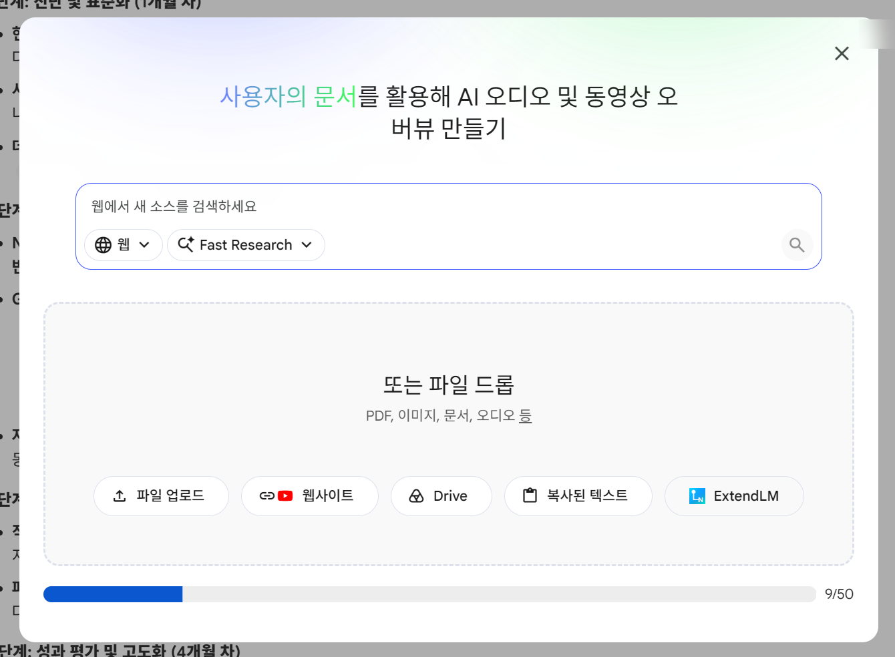
"요리에 비유해 볼까요? 최고급 셰프(AI)가 있어도, 상한 재료나 정체불명의 재료를 주면 요리를 망칩니다. 우리는 셰프에게 '이건 소고기(PDF 지침서)', '이건 신선한 채소(최신 복지부 웹사이트 기사)'라고 명확히 이름표를 붙여서 줘야 합니다. 이게 바로 소스 관리의 핵심입니다."
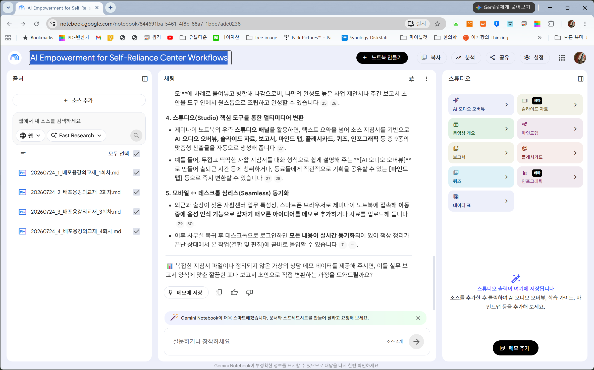
[💻 시연]
"소스 추가 버튼을 누르면 다양한 옵션이 나옵니다. 첫째, 내 컴퓨터의 PDF 파일을 올릴 수 있고요. 둘째, 유용한 복지 관련 기사 링크를 바로 붙여넣을 수도 있습니다. 셋째, 텍스트를 바로 복사해서 넣을 수도 있죠. 저는 방금 올린 PDF 파일의 이름을 클릭해서 '2026_지침_원본'으로 직관적으로 바꿔주겠습니다. 이렇게 해야 나중에 인용구를 볼 때 헷갈리지 않습니다."
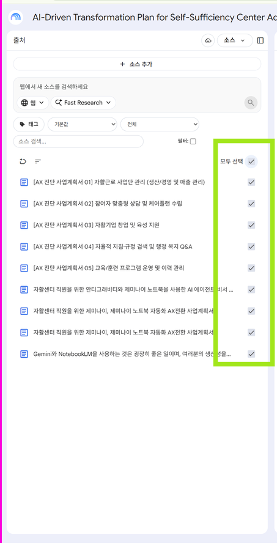
[✍️ 실습] 지역사회 연계 다회용기 세척 사업 제안서 초안 작성
- 상황 설정 (가상 샘플데이터): 지역사회 연계 사업(예: 다회용기 세척 사업) 제안서를 작성해야 합니다. 강사가 제공한 2개의 소스('2025년_타지역_우수사례_에코워시_다회용기_세척사업.pdf', '인천희망지역자활센터_다회용기세척사업_지역환경분석보고서.pdf')를 사용합니다.
- 실습 단계:
- 두 개의 소스 파일을 노트북에 업로드합니다.
- 채팅창을 통해 타 지역 우수사례의 핵심 성공 요인 3가지를 찾아 메모로 저장하세요(📌).
- 우리 지역에 적용할 때 예상되는 문제점 2가지를 채팅으로 물어보고 메모로 저장하세요(📌).
- 저장된 2개의 메모를 선택하여 하나의 새로운 메모로 [결합]하고, 제목을 '사업 제안서 초안'으로 수정하세요.
- 📥 실습 소스 파일 다운로드:
- 📄
타_지역_우수사례.pdf(2025년 경기 에코워시 다회용기 세척사업) - 📄
우리_지역_환경분석.pdf(인천희망지역자활센터 다회용기 사업 타당성 및 지역 환경분석) - 📦
2-7_실습용_자료_모음_다회용기세척사업_제안서.zip(전체 PDF/DOCX/TXT 패키지)
- 구체적인 프롬프트 (원클릭 복사용):
> 프롬프트 1 (타 지역 성공 요인 도출 ➔ 📌 핀 고정): > "타 지역 우수사례 문서(소스 1)를 기반으로, 다회용기 사업의 핵심 성공 요인 3가지를 개조식으로 요약해 줘." > > 프롬프트 2 (우리 지역 위협 및 문제점 도출 ➔ 📌 핀 고정): > "우리 지역 환경분석(소스 2)을 고려할 때, 이 사업을 도입할 경우 예상되는 가장 큰 문제점 2가지를 찾아줘."
- 실습 체크리스트:
- [ ] 2개의 소스 파일(타 지역 우수사례, 우리 지역 환경분석)을 정상 업로드했는가?
- [ ] 채팅 결과물을 핀(📌)을 눌러 성공적으로 메모 패널에 저장했는가?
- [ ] 다수의 메모를 선택(체크)하여 결합(Combine) 기능을 실행했는가?
- [ ] 결합된 메모의 제목을 '사업 제안서 초안'으로 수정하고 내용을 검토했는가?
[✅ 검증]
- 역량 검증 루브릭:
- 우수: 맥락, 제약, 출력 구조를 모두 갖춘 프롬프트를 스스로 작성하여 원하는 형태의 결과를 1회 만에 얻어낸다.
- 보통: 강사가 제공한 템플릿을 수정하여 프롬프트를 작성할 수 있다.
- 미흡: 프롬프트가 모호하여 AI가 원치 않는 답변을 출력한다.
[🚀 최적화]
- Before: AI가 엉뚱한 대답을 하면 짜증을 내며 "이거 못 쓰겠네"하고 포기한다. (행동 편향)
- After: 내가 질문을 잘못했음을 인지하고, 프롬프트 엔지니어링 공식을 적용해 AI를 완벽하게 통제한다. (자기효능감 폭발)
2-4프롬프트 전략 고도화 (Notebooks 맞춤형)
[개념 이해]
일반적인 챗GPT에 쓰는 프롬프트와 Gemini Notebooks에 쓰는 프롬프트는 결이 다릅니다. Gemini Notebooks은 '창작'보다는 '추출, 요약, 비교, 재구성'에 특화되어 있습니다. 따라서 프롬프트도 "업로드된 소스 내에서 ~을 찾아라", "소스 A와 B를 비교하라"는 식의 명확한 제약(Constraint)을 주어야 가장 훌륭한 결과가 나옵니다.
"가장 흔한 실수가 Gemini Notebooks에 대고 '자활 사업 아이디어 좀 참신하게 내봐'라고 하는 겁니다. 이 친구는 발명가가 아니라 도서관 사서입니다. '내가 준 자료 안에서, 유사한 성공 사례를 찾아 내 사업 계획서 양식에 맞게 초안을 작성해'라고 해야 완벽한 성과를 냅니다. 제약을 걸어줄수록 AI는 더 날카로워집니다."
[💻 시연]
"나쁜 예시와 좋은 예시를 보여드릴게요.
❌ 나쁜 프롬프트: '이 문서들 요약해 줘.' (결과: 뻔하고 평이한 두루뭉술한 요약)
⭕ 좋은 프롬프트: '이 문서들에서 [대상자 발굴 ➡️ 초기 상담 ➡️ 사후 관리] 프로세스별로 실무자가 주의해야 할 리스크를 1. 2. 3. 번호 매겨서 요약하고, 각 리스크별 대처 방안을 표로 제시해 줘.'
결과의 깊이가 완전히 다르죠? 구체적인 구조를 잡아주는 것이 핵심입니다."
[✍️ 실습] '맥락-제약-출력' 3단 프롬프트 설계
- 상황 설정: 방대한 매뉴얼에서 신규 입사자 교육용 1장짜리 요약본을 만들어야 합니다.
- 가상 샘플데이터: 모든 소스 선택 (지침서, 사례 등)
- 실습 프롬프트 (원클릭 복사용):
> [맥락] 너는 10년 차 우수 자활 실무자야. 신규 입사자를 위한 오리엔테이션 자료를 만들려고 해. > [제약] 반드시 업로드된 '2026 자활사업 지침' 문서의 내용만 사용할 것. 외부 정보는 가져오지 마. > [출력] 신규 입사자가 반드시 알아야 할 '핵심 행정 절차 5가지'를 뽑아서, 초보자도 이해하기 쉬운 친절한 말투로 설명해 줘. 마지막에는 확인 퀴즈 3문제를 만들어 줘.
- 실습 체크리스트:
- [ ] 프롬프트에 역할(Persona)이 부여되었는가?
- [ ] 소스 기반의 명확한 제약 조건이 포함되었는가?
- [ ] 출력 형태(어조, 포맷, 추가 요소)가 구체적인가?
[✅ 검증]
- 역량 검증 루브릭:
- 우수: 맥락, 제약, 출력 구조를 모두 갖춘 프롬프트를 스스로 작성하여 원하는 형태의 결과를 1회 만에 얻어낸다.
- 보통: 강사가 제공한 템플릿을 수정하여 프롬프트를 작성할 수 있다.
- 미흡: 프롬프트가 모호하여 AI가 원치 않는 답변을 출력한다.
[🚀 최적화]
- Before: AI가 엉뚱한 대답을 하면 짜증을 내며 "이거 못 쓰겠네"하고 포기한다.
- After: 프롬프트 엔지니어링 공식을 적용해 AI를 완벽하게 통제하여 원하는 규격의 결과를 1회에 뽑아낸다.
2-5노트북(Notebooks) 구성 (페르소나/길이 조절)
[개념 이해]
Gemini Notebooks에 역할을 부여(Persona)하고, 답변의 형식(Format)과 분량(Length)을 엄격하게 제한하여 내가 원하는 맞춤형 보고서를 뽑아내는 고급 프롬프트 기법입니다.
"AI에게 '자활센터 보고서 써줘'라고 하면 교과서 같은 뻔한 소리만 합니다. 하지만 '너는 10년 차 베테랑 사례관리자야. 온정적이면서도 행정적으로 빈틈없는 어조로 500자 내외로 요약해'라고 명령하면, 현업 전문가가 쓴 것 같은 날카로운 글이 나옵니다. 페르소나와 분량 제약은 AI의 출력을 통제하는 핸들이자 브레이크입니다."
[💻 시연]
"제가 방금 '월간 상담 일지 분석_홍길동'이라는 새 노트북을 만들고, 5명의 상담일지 텍스트를 넣었습니다. 프롬프트에 페르소나와 분량을 명시하여 실행하면, AI가 참여자들의 경제적 어려움, 육체적 피로, 대인관계 갈등, 시설 보완 요구를 일목요연하게 3대 핵심 애로사항으로 묶어내고, 정확히 500자 내외의 다음 달 개선 방안 보고서로 완성해 줍니다."
[✍️ 실습] 지역사회 연계 다회용기 세척 사업 제안서 초안 작성
- 상황 설정 (가상 샘플데이터): 지역사회 연계 사업(예: 다회용기 세척 사업) 제안서를 작성해야 합니다. 강사가 제공한 2개의 소스('2025년_타지역_우수사례_에코워시_다회용기_세척사업.pdf', '인천희망지역자활센터_다회용기세척사업_지역환경분석보고서.pdf')를 사용합니다.
- 실습 단계:
- 두 개의 소스 파일을 노트북에 업로드합니다.
- 채팅창을 통해 타 지역 우수사례의 핵심 성공 요인 3가지를 찾아 메모로 저장하세요(📌).
- 우리 지역에 적용할 때 예상되는 문제점 2가지를 채팅으로 물어보고 메모로 저장하세요(📌).
- 저장된 2개의 메모를 선택하여 하나의 새로운 메모로 [결합]하고, 제목을 '사업 제안서 초안'으로 수정하세요.
- 📥 실습 소스 파일 다운로드:
- 📄
타_지역_우수사례.pdf(2025년 경기 에코워시 다회용기 세척사업) - 📄
우리_지역_환경분석.pdf(인천희망지역자활센터 다회용기 사업 타당성 및 지역 환경분석) - 📦
2-7_실습용_자료_모음_다회용기세척사업_제안서.zip(전체 PDF/DOCX/TXT 패키지)
- 구체적인 프롬프트 (원클릭 복사용):
> 프롬프트 1 (타 지역 성공 요인 도출 ➔ 📌 핀 고정): > "타 지역 우수사례 문서(소스 1)를 기반으로, 다회용기 사업의 핵심 성공 요인 3가지를 개조식으로 요약해 줘." > > 프롬프트 2 (우리 지역 위협 및 문제점 도출 ➔ 📌 핀 고정): > "우리 지역 환경분석(소스 2)을 고려할 때, 이 사업을 도입할 경우 예상되는 가장 큰 문제점 2가지를 찾아줘."
- 실습 체크리스트:
- [ ] 2개의 소스 파일(타 지역 우수사례, 우리 지역 환경분석)을 정상 업로드했는가?
- [ ] 채팅 결과물을 핀(📌)을 눌러 성공적으로 메모 패널에 저장했는가?
- [ ] 다수의 메모를 선택(체크)하여 결합(Combine) 기능을 실행했는가?
- [ ] 결합된 메모의 제목을 '사업 제안서 초안'으로 수정하고 내용을 검토했는가?
[✅ 검증]
- 역량 검증 루브릭:
- 우수: 페르소나와 출력 제약(길이, 톤)을 정밀하게 통제하여 현업 규격의 완성형 보고서를 도출한다.
- 보통: 프롬프트에 역할을 부여하고 기본적인 요약을 수행할 수 있다.
- 미흡: 페르소나 없이 모호하게 질문하여 지나치게 길거나 장황한 답변을 받는다.
[🚀 최적화]
- Before: 5명의 상담일지를 일일이 읽고 공통점을 수기로 정리하여 월간 회의록 작성. (소요시간: 2시간)
- After: 프롬프트 1회 실행으로 핵심 애로사항 도출 및 500자 개선안 보고서 즉시 생성. (소요시간: 3분)
2-6멀티미디어 아티팩트 생성 (오디오 브리핑 및 시각화)
[개념 이해]
NotebookLM은 단순 텍스트 요약을 넘어, 스튜디오 패널을 통해 텍스트 지침서를 '2명의 진행자가 토론하는 AI 팟캐스트(오디오 오버뷰)'나 '시각적 슬라이드 덱', '인포그래픽', '마인드맵' 등 풍부한 멀티미디어 아티팩트로 자동 변환해 줍니다.
"선생님들, 두꺼운 지침서 읽다가 스르르 잠든 경험 있으시죠? 이제 그 지침서를 진행자 두 명이 대화하듯 설명해주는 [AI 오디오 오버뷰]로 만들거나, 상사에게 바로 보고할 수 있는 [슬라이드 자료]로 바꿀 수 있습니다. 이것이 스튜디오 패널의 역할입니다. 텍스트 문서가 오디오와 [인포그래픽]으로 바뀌는 과정을 함께 보겠습니다."
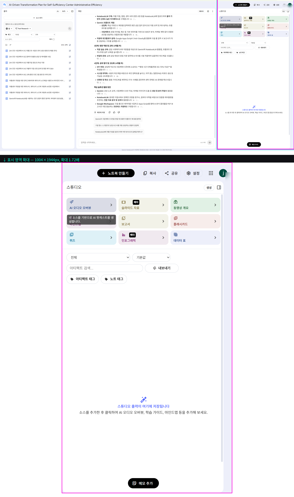
[💻 시연]
- 생성할 산출물 선택 — AI 오디오 오버뷰 · 슬라이드 자료 · 동영상 개요 · 마인드 맵 · 보고서 · 플래시카드 · 퀴즈 · 인포그래픽 · 데이터 표 중 목적에 맞는 버튼 클릭
(버튼 우측 꺾쇠(∨) → 형식 · 언어 · 길이 · 사용할 소스 · 추천 프롬프트/직접 입력 맞춤설정)
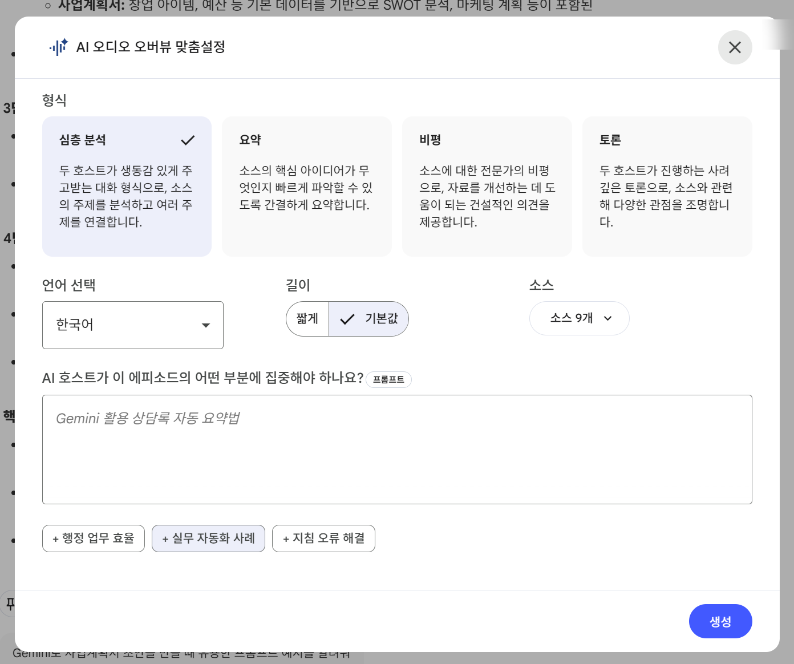
[✍️ 실습] 지역사회 연계 다회용기 세척 사업 제안서 초안 작성
- 상황 설정 (가상 샘플데이터): 지역사회 연계 사업(예: 다회용기 세척 사업) 제안서를 작성해야 합니다. 강사가 제공한 2개의 소스('2025년_타지역_우수사례_에코워시_다회용기_세척사업.pdf', '인천희망지역자활센터_다회용기세척사업_지역환경분석보고서.pdf')를 사용합니다.
- 실습 단계:
- 두 개의 소스 파일을 노트북에 업로드합니다.
- 채팅창을 통해 타 지역 우수사례의 핵심 성공 요인 3가지를 찾아 메모로 저장하세요(📌).
- 우리 지역에 적용할 때 예상되는 문제점 2가지를 채팅으로 물어보고 메모로 저장하세요(📌).
- 저장된 2개의 메모를 선택하여 하나의 새로운 메모로 [결합]하고, 제목을 '사업 제안서 초안'으로 수정하세요.
- 📥 실습 소스 파일 다운로드:
- 📄
타_지역_우수사례.pdf(2025년 경기 에코워시 다회용기 세척사업) - 📄
우리_지역_환경분석.pdf(인천희망지역자활센터 다회용기 사업 타당성 및 지역 환경분석) - 📦
2-7_실습용_자료_모음_다회용기세척사업_제안서.zip(전체 PDF/DOCX/TXT 패키지)
- 구체적인 프롬프트 (원클릭 복사용):
> 프롬프트 1 (타 지역 성공 요인 도출 ➔ 📌 핀 고정): > "타 지역 우수사례 문서(소스 1)를 기반으로, 다회용기 사업의 핵심 성공 요인 3가지를 개조식으로 요약해 줘." > > 프롬프트 2 (우리 지역 위협 및 문제점 도출 ➔ 📌 핀 고정): > "우리 지역 환경분석(소스 2)을 고려할 때, 이 사업을 도입할 경우 예상되는 가장 큰 문제점 2가지를 찾아줘."
- 실습 체크리스트:
- [ ] 2개의 소스 파일(타 지역 우수사례, 우리 지역 환경분석)을 정상 업로드했는가?
- [ ] 채팅 결과물을 핀(📌)을 눌러 성공적으로 메모 패널에 저장했는가?
- [ ] 다수의 메모를 선택(체크)하여 결합(Combine) 기능을 실행했는가?
- [ ] 결합된 메모의 제목을 '사업 제안서 초안'으로 수정하고 내용을 검토했는가?
[✅ 검증]
- [ ] [AI 오디오 오버뷰]로 생성한 오디오가 정상적으로 재생되는가? (재생 속도 0.5x~2.0x 조절, 점 세 개(⋯) 메뉴로 MP3 다운로드 가능)
- [ ] 슬라이드 덱의 내용이 문서의 핵심을 잘 요약하고 있는가?
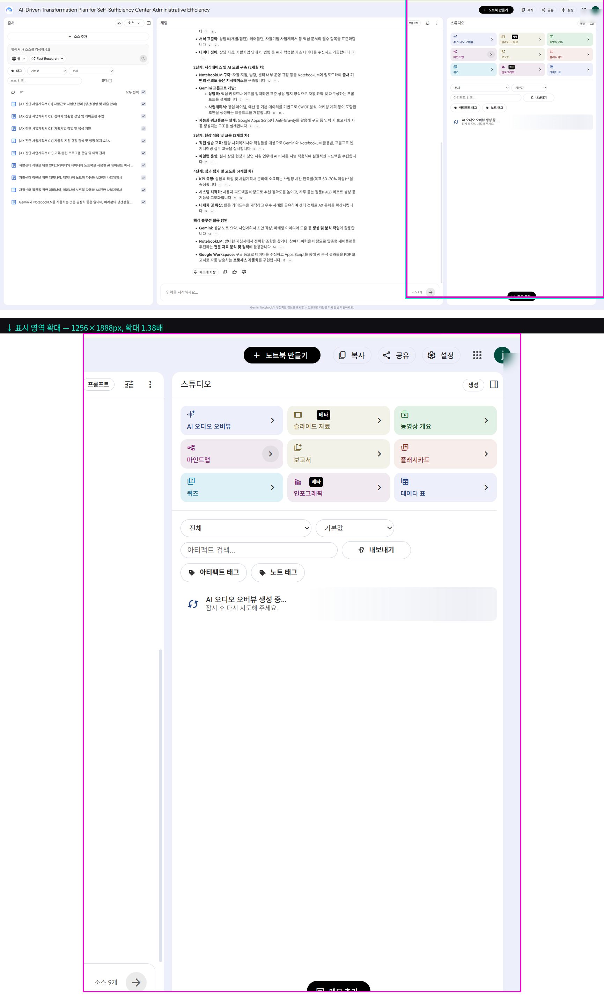
[🚀 최적화]
- 생성된 아티팩트를 부서원들과 공유하여, 복잡한 텍스트 문서를 읽지 않고도 빠르고 직관적인 업무 파악이 가능하도록 활용해보세요.
2-7채팅-메모-소스 순환 워크플로우
[개념 이해]
NotebookLM의 핵심 워크플로우는 '소스 주입 ➔ 채팅 탐색 ➔ 메모 고정(📌) ➔ 메모 결합 및 재가공 ➔ 새로운 소스 순환' 구조입니다.
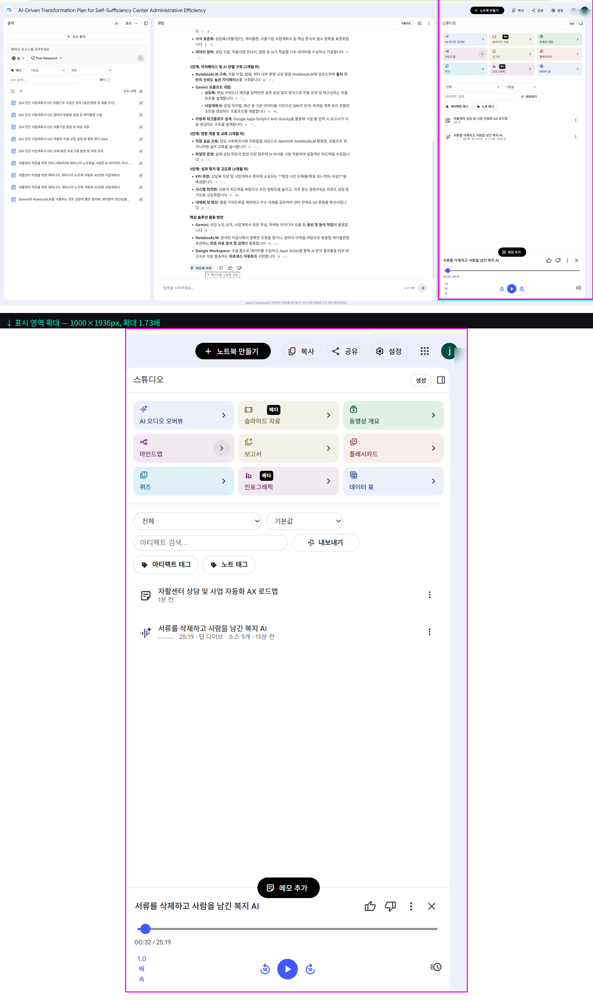
이 과정은 인간의 뇌가 정보를 '탐색(발산)'하고 '구조화(수렴)'하는 자연스러운 인지 과정을 완벽하게 모방한 설계입니다. 메모들을 결합하여 하나의 완성된 보고서를 만들어내는 경험은 즉각적인 업무 효율성을 제공합니다.
"여러분, 구슬이 서 말이라도 꿰어야 보배라는 말이 있죠? 아무리 AI가 좋은 답을 채팅창에 내놓아도, 그걸 복사해서 한글 파일에 옮기고 정리하다 보면 맥이 빠집니다. Gemini Notebooks는 이 과정을 도구 안에서 끝낼 수 있습니다. 채팅하다가 쓸 만한 답이 나오면 핀(📌) 아이콘을 누르세요. '메모'로 저장됩니다.
내 자료(소스)에서 묻고(채팅), 쓸 만한 답을 모아(메모), 하나의 문서로 조립하는 흐름 — 이 순환을 익히시면 작업 속도가 확실히 달라집니다."
[💻 시연]
- 업로드된 소스를 바탕으로 채팅창에서 질문 진행
- 만족스러운 답변이 나오면 채팅 상단의 핀(📌 '메모에 저장') 아이콘 클릭
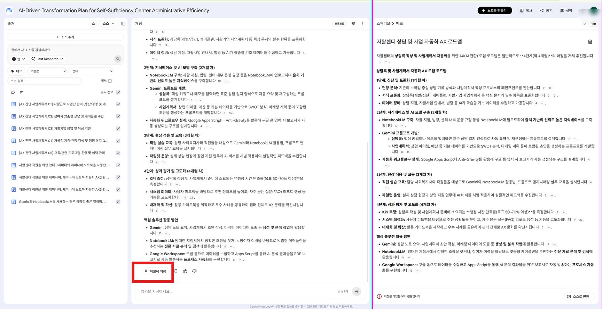
"잘 보세요. 제가 소스 문서에서 '2024년 지원금 변경 사항'을 물어봤습니다. 훌륭한 답변이 나왔네요. 복사할 필요 없이 여기 핀 모양 버튼을 누릅니다. 찰칵! 우측 메모장에 예쁘게 붙었죠? 하나 더, '참여자 유의사항'도 물어보고 핀으로 고정합니다."
[✍️ 실습] 지역사회 연계 다회용기 세척 사업 제안서 초안 작성
- 상황 설정 (가상 샘플데이터): 지역사회 연계 사업(예: 다회용기 세척 사업) 제안서를 작성해야 합니다. 강사가 제공한 2개의 소스('2025년_타지역_우수사례_에코워시_다회용기_세척사업.pdf', '인천희망지역자활센터_다회용기세척사업_지역환경분석보고서.pdf')를 사용합니다.
- 실습 단계:
- 두 개의 소스 파일을 노트북에 업로드합니다.
- 채팅창을 통해 타 지역 우수사례의 핵심 성공 요인 3가지를 찾아 메모로 저장하세요(📌).
- 우리 지역에 적용할 때 예상되는 문제점 2가지를 채팅으로 물어보고 메모로 저장하세요(📌).
- 저장된 2개의 메모를 선택하여 하나의 새로운 메모로 [결합]하고, 제목을 '사업 제안서 초안'으로 수정하세요.
- 📥 실습 소스 파일 다운로드:
- 📄
타_지역_우수사례.pdf(2025년 경기 에코워시 다회용기 세척사업) - 📄
우리_지역_환경분석.pdf(인천희망지역자활센터 다회용기 사업 타당성 및 지역 환경분석) - 📦
2-7_실습용_자료_모음_다회용기세척사업_제안서.zip(전체 PDF/DOCX/TXT 패키지)
- 구체적인 프롬프트 (원클릭 복사용):
> 프롬프트 1 (타 지역 성공 요인 도출 ➔ 📌 핀 고정): > "타 지역 우수사례 문서(소스 1)를 기반으로, 다회용기 사업의 핵심 성공 요인 3가지를 개조식으로 요약해 줘." > > 프롬프트 2 (우리 지역 위협 및 문제점 도출 ➔ 📌 핀 고정): > "우리 지역 환경분석(소스 2)을 고려할 때, 이 사업을 도입할 경우 예상되는 가장 큰 문제점 2가지를 찾아줘."
- 실습 체크리스트:
- [ ] 2개의 소스 파일(타 지역 우수사례, 우리 지역 환경분석)을 정상 업로드했는가?
- [ ] 채팅 결과물을 핀(📌)을 눌러 성공적으로 메모 패널에 저장했는가?
- [ ] 다수의 메모를 선택(체크)하여 결합(Combine) 기능을 실행했는가?
- [ ] 결합된 메모의 제목을 '사업 제안서 초안'으로 수정하고 내용을 검토했는가?
[✅ 검증]
- 역량 검증 루브릭 (Self-Check):
- 우수: 소스-채팅-메모 간의 순환 과정을 완벽히 이해하고, 파편화된 정보를 모아 논리적인 하나의 글로 결합해 냄.
- 보통: 메모 저장은 할 수 있으나, 여러 메모를 결합하거나 재구성하는 과정에서 약간의 머뭇거림이 있음.
- 미흡: 채팅창에서 정보를 얻는 것에 그치고, 이를 메모로 저장하여 자산화하는 시스템(워크플로우)을 활용하지 못함.
[🚀 최적화]
- Before (도입 전): 챗GPT에서 나온 답변을 아래아한글이나 워드 창에 일일이 복사+붙여넣기 함. 맥락이 끊기고 출처를 잃어버려 재검증에 시간 낭비.
- After (도입 후): Gemini Notebooks 안에서 출처가 명확히 달린 메모들을 조립식으로 결합하여 완성형 초안 즉시 완성.
2-8모바일 기기와의 연동
[개념 이해]
현대 실무자들은 데스크톱 앞에만 앉아 있지 않습니다. 외부 미팅, 출장, 출퇴근 등 이동 시간이 상당합니다. Gemini Notebooks은 클라우드 기반 웹 서비스로, 구글 계정만 연동되어 있으면 스마트폰, 태블릿 등 모바일 기기에서도 동일한 작업 환경에 접속할 수 있습니다.
'장소의 제약'을 허무는 것은 행동주의 심리학에서 말하는 '접근성(Accessibility)'을 극대화하여 툴 사용 빈도를 높이는 가장 확실한 넛지입니다. 갑자기 떠오른 아이디어나 현장에서 찍은 사진/메모를 모바일로 즉시 업로드하고, 사무실에 돌아와 PC로 이어서 작업하는 하이브리드 워크플로우를 구축할 수 있습니다.
"선생님들, 훌륭한 아이디어는 꼭 책상 앞에서 모니터를 뚫어져라 쳐다볼 때 나오지 않습니다. 오히려 퇴근길 버스 안에서, 혹은 현장 실사를 마치고 돌아오는 길에 번뜩 떠오르죠. 그때 어떻게 하시나요? 카카오톡 '나에게 보내기'에 대충 적어두시나요? 이제는 스마트폰 브라우저를 열고 Gemini Notebooks에 접속하세요. 이동 중에 음성으로 텍스트를 입력해 메모로 남기거나, 방금 받은 자료를 업로드해 보세요. 사무실 PC를 켜면 모든 내용이 동기화되어 여러분을 기다리고 있을 겁니다. 일과 장소의 경계를 허무는 것, 이것이 스마트 워킹의 완성입니다."
[💻 시연]
- 스마트폰(또는 강사의 태블릿 미러링)에서 웹 브라우저(크롬, 사파리 등)를 열고 notebooklm.google.com 접속 시연
- 구글 계정 로그인 후, 앞서 PC에서 작업했던 노트북이 그대로 보이는지 확인(동기화 입증)
- 모바일 환경에서 텍스트 노트를 하나 작성하여 저장
- 다시 PC 화면으로 돌아와 해당 메모가 실시간으로 반영되어 있는지 확인
"제 스마트폰 화면을 스크린에 띄워보겠습니다. 사파리를 열고 Gemini Notebooks에 들어갑니다. 아까 우리가 함께 만들었던 '월간 상담 일지' 노트북이 그대로 있죠? 터치해서 들어가 볼게요. 현장에서 갑자기 떠오른 아이디어가 있다고 칠게요. '메모 추가'를 누르고 음성인식 마이크를 켭니다. (음성으로) '다음 달 다회용기 사업 홍보 시, 맘카페를 적극 활용할 것.' 자, 저장이 되었습니다. 이제 제 PC 화면을 볼까요? 방금 폰에서 단 메모가 1초의 지연도 없이 PC에 짠 하고 나타납니다. 어떠신가요? 소름 돋지 않으시나요?"
[✍️ 실습] 지역사회 연계 다회용기 세척 사업 제안서 초안 작성
- 상황 설정 (가상 샘플데이터): 지역사회 연계 사업(예: 다회용기 세척 사업) 제안서를 작성해야 합니다. 강사가 제공한 2개의 소스('2025년_타지역_우수사례_에코워시_다회용기_세척사업.pdf', '인천희망지역자활센터_다회용기세척사업_지역환경분석보고서.pdf')를 사용합니다.
- 실습 단계:
- 두 개의 소스 파일을 노트북에 업로드합니다.
- 채팅창을 통해 타 지역 우수사례의 핵심 성공 요인 3가지를 찾아 메모로 저장하세요(📌).
- 우리 지역에 적용할 때 예상되는 문제점 2가지를 채팅으로 물어보고 메모로 저장하세요(📌).
- 저장된 2개의 메모를 선택하여 하나의 새로운 메모로 [결합]하고, 제목을 '사업 제안서 초안'으로 수정하세요.
- 📥 실습 소스 파일 다운로드:
- 📄
타_지역_우수사례.pdf(2025년 경기 에코워시 다회용기 세척사업) - 📄
우리_지역_환경분석.pdf(인천희망지역자활센터 다회용기 사업 타당성 및 지역 환경분석) - 📦
2-7_실습용_자료_모음_다회용기세척사업_제안서.zip(전체 PDF/DOCX/TXT 패키지)
- 구체적인 프롬프트 (원클릭 복사용):
> 프롬프트 1 (타 지역 성공 요인 도출 ➔ 📌 핀 고정): > "타 지역 우수사례 문서(소스 1)를 기반으로, 다회용기 사업의 핵심 성공 요인 3가지를 개조식으로 요약해 줘." > > 프롬프트 2 (우리 지역 위협 및 문제점 도출 ➔ 📌 핀 고정): > "우리 지역 환경분석(소스 2)을 고려할 때, 이 사업을 도입할 경우 예상되는 가장 큰 문제점 2가지를 찾아줘."
- 실습 체크리스트:
- [ ] 2개의 소스 파일(타 지역 우수사례, 우리 지역 환경분석)을 정상 업로드했는가?
- [ ] 채팅 결과물을 핀(📌)을 눌러 성공적으로 메모 패널에 저장했는가?
- [ ] 다수의 메모를 선택(체크)하여 결합(Combine) 기능을 실행했는가?
- [ ] 결합된 메모의 제목을 '사업 제안서 초안'으로 수정하고 내용을 검토했는가?
[✅ 검증]
역량 검증 루브릭 (Self-Check)
- ⭐️⭐️⭐️ (우수): 모바일과 PC의 연동 개념을 완벽히 체화하여, 이동 중에도 언제든 AI 비서를 호출하고 정보를 축적할 수 있는 준비가 됨.
- ⭐️⭐️ (보통): 모바일 접속과 동기화 확인은 했으나, 모바일 브라우저 환경에서의 UI 조작(핀 고정, 메뉴 찾기 등)에 다소 어색함을 느낌.
- ⭐️ (미흡): 모바일 기기에서 계정 로그인에 실패하거나, PC와 다른 계정으로 로그인하여 동기화 확인에 실패함.
[🚀 최적화]
- Before (도입 전): 현장에서 얻은 영감이나 자료를 카카오톡 내게 쓰기, 수첩, 이메일 등 파편화된 도구에 중구난방으로 기록함. 막상 사무실에 오면 어디에 적었는지 찾느라 시간을 허비함. (정보의 유실, 작업 흐름 단절)
- After (도입 후): 생각나는 즉시 모바일 Gemini Notebooks 해당 '서랍(노트북)'에 바로 꽂아 넣음. 사무실에 복귀하면 책상 정리가 이미 끝난 상태에서 본 작업(결합 및 편집)만 우아하게 시작함. (매끄러운 작업 흐름, 높은 생산성 유지)
💡 트러블슈팅 Q&A Q: 전용 모바일 앱(App)은 없나요? 매번 브라우저로 들어가기 귀찮아요. A: 현재(2024년 기준) 구글에서 공식 Gemini Notebooks 전용 앱을 출시하지는 않았습니다. 하지만 스마트폰 브라우저에서 '홈 화면에 추가' 기능을 사용하면, 마치 앱 아이콘처럼 바탕화면에 빼놓고 원클릭으로 접속할 수 있습니다. (강사가 안드로이드/아이폰별 홈 화면 추가 방법 안내)
본 교안은 인천지역 희망자활센터 실무자들의 인지 부하를 최소화하고, 즉각적인 성취감을 통해 도파민 기반의 학습 동기를 부여하도록 설계된 마스터 교안입니다. 각 실무자는 반복되고 소모적인 행정 업무에서 벗어나, 자활 참여자들과의 정서적 교감 및 사례 관리에 집중할 수 있는 '시간과 에너지'를 확보하는 것을 궁극적인 목표로 합니다.
2-9아티팩트(Artifacts) 및 프롬프트 라이브러리 활용
아티팩트(Artifacts)란 무엇인가? AI와의 대화(채팅) 과정에서 생성되는 중요한 산출물을 의미합니다. 긴 분량의 사업 기획서, 복잡한 데이터가 담긴 표, 코드 스니펫 또는 마크다운 문서 등이 생성될 때, 채팅창 내에 섞여서 스크롤을 올려야만 볼 수 있는 것이 아니라 우측에 독립된 패널이나 별도의 파일 형태로 분리되어 표시되는 기능입니다. 이를 통해 사용자는 생성된 결과물을 실시간 확인하고, AI에게 수정을 지시함과 동시에 직접 텍스트를 편집할 수도 있습니다.
프롬프트 라이브러리(Prompt Library)란? 자활센터 실무에서 반복적으로 발생하는 업무(예: 상담 일지 요약, 보도자료 초안 작성, 월간 보고서 목차 구성 등)를 처리하기 위해, 최적화된 프롬프트를 템플릿 형태로 저장하고 분류해 둔 개인화된 데이터베이스입니다. 변수(예: [사업단명], [참여자이름])만 바꾸어 재사용할 수 있도록 시스템화하는 것이 핵심입니다.
"선생님들, 우리가 하루 종일 모니터를 보며 수많은 창을 띄워놓고 일할 때 우리 뇌에서는 어떤 일이 벌어질까요? 뇌과학에서는 이를 '인지적 과부하(Cognitive Overload)'라고 합니다. 새로운 기획안을 쓸 때마다 '어떻게 시작해야 하지?', '지난번에 어떻게 지시했더라?' 고민하는 과정은 뇌의 전두엽 에너지를 심각하게 고갈시킵니다. 여러분의 뇌는 창의적인 기획과 참여자를 향한 따뜻한 공감에 쓰여야 합니다. '아티팩트'와 '프롬프트 라이브러리'는 바로 여러분의 뇌를 위한 '외장 하드디스크'입니다. 자, 행동경제학의 '넛지(Nudge)'를 우리 스스로에게 적용해 봅시다. 완벽한 지시어를 라이브러리에 저장해 두는 작은 행동 하나가, 내일 아침 출근했을 때 백지상태에서 오는 두려움을 완전히 없애줍니다. 버튼 한 번으로 완성된 기획안 초안이 독립된 아티팩트 창에 하고 나타날 때의 그 짜릿함. 바로 그 순간 분비되는 도파민이 여러분의 업무 스트레스를 날려버릴 것입니다. 한 번 만들어둔 라이브러리가 여러분의 퇴근 시간을 매일 30분, 1년이면 무려 120시간을 앞당길 수 있습니다!"
[시나리오: 자활근로사업 연간 계획서 초안 작성 및 저장]
- 아티팩트 생성: 강사가 메인 화면에 프롬프트를 입력합니다. "2025년도 신규 다회용기 세척 자활사업 연간 운영 계획서를 마크다운 형식의 문서로 작성해줘."
- 독립 패널 확인: 결과물이 대화창에서 분리되어 우측에 깔끔한 문서 형태(아티팩트)로 나타나는 것을 보여줍니다.
- 실시간 편집: 강사가 아티팩트 창 내에서 직접 마우스를 클릭해 특정 문구('지역 사회 기여' -> '인천시 관내 취약계층 지원')를 키보드로 바로 수정하는 모습을 시연합니다. "여러분, 복사해서 한글을 따로 열 필요가 없습니다. 여기서 바로 퇴고가 가능합니다."
- 라이브러리화: 오늘 사용한 성공적인 프롬프트를 복사하여 메모장이나 노션(Notion)을 열고,
[신규사업 기획 프롬프트 템플릿]이라는 제목으로 저장합니다. 괄호[ ]를 활용해 다음번엔 단어만 끼워 넣을 수 있도록 구조화하는 과정을 보여줍니다.
"결과물이 대화창 밖으로 독립되는 순간, 여러분의 뇌는 이 텍스트를 '휘발성 대화'가 아닌 '내가 소유한 자산'으로 인식하게 됩니다. 심리학에서는 이를 '소유 효과(Endowment Effect)'라고 부르죠. 여러분이 직접 다듬은 프롬프트가 라이브러리에 하나둘 쌓일수록, 여러분은 마치 든든한 무기고를 가진 장군처럼 든든해질 것입니다."
- 상황 설정: 선생님은 다음 주 센터장님께 보고할 '신규 자활사업(친환경 다회용기 세척 사업)' 제안서를 작성해야 합니다. 초기 기획의 막막함을 AI 아티팩트로 해결해 보겠습니다.
- 프롬프트 템플릿 (아래 내용을 복사해서 사용하세요):
당신은 10년 차 자활사업 기획 및 공공행정 전문가입니다.
다음 조건에 맞춰 '[사업명]' 기획안 초안을 작성해주세요.
반드시 '아티팩트(Artifact)' 형태나 마크다운 문서 포맷으로 생성하여 내가 쉽게 읽고 수정할 수 있도록 분리해주세요.
[기본 정보]
- 사업명: 친환경 다회용기 세척 사업 (에코워싱)
- 목적: 저소득층 일자리 창출 및 인천지역 탄소중립 실천 기여
- 타겟 고객: 인천 관내 배달 음식점, 공공기관 카페, 장례식장
[포함해야 할 목차]
1. 사업 개요 (추진 배경 및 필요성)
2. SWOT 분석 (강점, 약점, 기회, 위협)
3. 참여자 직무 훈련 계획
4. 연간 추진 일정 (분기별 표 형태로 작성)- 실습 체크리스트 (행동 유도):
- [ ] 입력 후 AI가 생성한 기획안이 일반 대화 텍스트가 아닌, 별도의 아티팩트(문서/코드 뷰어 창)로 분리되어 나타났는가?
- [ ] 아티팩트 창에 마우스를 올리고 직접 텍스트 일부를 추가하거나 삭제하는 등 편집(Edit) 기능을 사용해 보았는가?
- [ ] 사용한 위 프롬프트를 복사하여 본인의 PC 바탕화면 메모장이나 업무 노트에 '자활사업 기획안 마스터 템플릿'이라는 이름으로 저장(Save) 하였는가?
역량 검증 루브릭 (관찰 평가)
- 🌟 우수: 아티팩트를 활용하여 결과물을 성공적으로 생성하고 실시간 편집 기능을 능숙하게 다루며, 본인만의 프롬프트를 변수(예:
[사업명],[타겟 고객]) 단위로 완벽하게 모듈화하여 라이브러리에 저장함. 동료에게 저장 방식을 설명할 수 있음.
- 🟢 보통: 아티팩트 창을 생성하고 내용을 복사할 수 있으며, 강사가 준 프롬프트를 원형 그대로 저장함. 편집 기능의 존재는 인지함.
- 🔺 노력 요망: 아티팩트와 일반 대화창의 차이를 이해하지 못하여 채팅창 안에서만 내용을 스크롤하며 찾음. 프롬프트를 매번 새로 타이핑하려고 함.
- Before (도입 전): 매번 백지상태의 한글 파일을 띄워놓고 "서론을 어떻게 시작하지?"라며 커서만 깜빡이는 모니터를 30분째 쳐다봄. 스트레스 호르몬인 코르티솔 분비 증가. 인지적 병목 현상 발생.
- After (도입 후): 저장된 '마스터 템플릿'을 라이브러리에서 불러와 변수만 3개 변경 후 즉시 실행. 아티팩트 창에서 1차 퇴고를 마친 후 완벽한 상태로 한글 문서에 붙여넣음. 백지에서 시작하던 작업이 템플릿 수정으로 바뀌어, 착수까지 걸리는 시간과 부담이 크게 줄어듦.
💡 트러블슈팅 Q&A Q: "아티팩트 창이 안 뜨고 그냥 채팅창에 길게 글씨만 나옵니다." A: 사용자 환경(Gemini Advanced 여부, 랩스 기능 활성화 등)에 따라 다를 수 있습니다. 프롬프트 마지막에 "반드시 코딩 블록(```)이나 마크다운 형식으로 감싸서 출력해줘"라고 지시하면 시각적으로 분리된 형태로 받아보기 훨씬 수월해집니다.
🔗 Google Gemini 도움말: Canvas로 문서·앱 만들기
2-10데이터표 일괄생성 처리 기법
[개념 이해]
데이터 구조화(Data Structuring) 기술 현장 실무에서 발생하는 대부분의 기록(상담 메모, 일일 업무일지, 참여자 면담록)은 '비정형 줄글 데이터' 형태입니다. 이를 통계 보고나 사례관리에 활용하기 위해서는 일정한 규격의 '정형 데이터표'로 변환해야 합니다. Gemini Notebooks는 자연어 처리(NLP)를 활용해 뒤죽박죽 섞인 텍스트 더미를 단 몇 초 만에 완벽한 열(Column)과 행(Row)을 갖춘 표로 추출하고 Google Sheets로 즉시 연동해 줍니다.
"센터에서 가장 고통스러운 업무 중 하나가 무엇입니까? 바로 수십 명의 상담 일지나 면담 메모를 엑셀 셀마다 하나하나 옮겨 적는 단순 반복 복붙 작업입니다. 비정형 데이터를 통째로 던져주고 완벽한 표로 뱉어내게 만드는 순간, 업무 스트레스가 뻥 뚫리는 강력한 쾌감을 느끼실 겁니다. 여러분의 귀중한 에너지는 엑셀 칸을 채우는 데 쓰일 것이 아니라, 도움이 필요한 참여자와 따뜻하게 눈을 맞추고 상담하는 데 쓰여야 합니다."
[💻 시연]
- 원시 데이터 제시: 화면에 참여자 10명 분량의 정리가 안 된, 오타와 구어체가 섞인 면담 메모 텍스트를 띄웁니다.
- 구조화 프롬프트 실행: 준비된 구조화 프롬프트에 메모를 복사해 붙여넣고 실행버튼을 누릅니다.
- 즉각적 피드백: 화면에 완벽하게 정렬된 마크다운 표가 순식간에 생성되는 것을 확인합니다.
- 시트 연동: 표 우측 하단에 나타나는 'Google Sheets로 내보내기' 아이콘을 클릭하여 스프레드시트로 즉시 이전합니다.
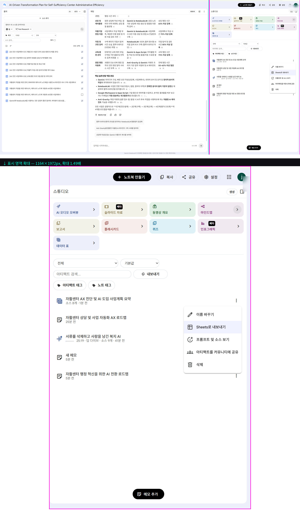
[✍️ 실습] 참여자 10인 면담 메모 ➔ 맞춤형 복지 관리 정형 데이터표 변환
- 상황 설정: 선생님은 인천희망지역자활센터 사업단 참여자 10명의 월간 정기 면담을 마쳤습니다. 참여자들이 호소하는 직무상 고충(신체 통증, 업무 스트레스)과 경제적 어려움(채무, 주거비, 의료비)을 구글 스프레드시트로 일목요연하게 정리하여 맞춤형 복지 서비스를 연계해야 합니다.
- 가상 샘플데이터 10인 (드래그해서 복사하세요):
김철수, 마흔다섯살. 에스프레소 머신 추출은 능숙하나 장시간 서서 일해 허리 디스크 통증이 심함. 지난달 월세 40만 원과 가스비가 밀려 생계비 압박이 큼.
이영희 52세. 고객 응대는 매우 친절하나 손목 터널 증후군으로 얼음통 들기가 버거움. 전 배우자 양육비 미지급으로 자녀 학원비 납부에 큰 어려움을 겪음.
박민준, 삼십대 초반(32). 태도는 성실하지만 새로운 레시피 암기와 포스기 결제에 심한 스트레스를 느낌. 청년 채무 워크아웃 월 20만 원 납입이 빠듯함.
최지은 48세. 매장 청결 관리는 철저하나 점심 피크 시간대 주문 폭주 시 공황 증세와 피로감을 호소함. 치과 임플란트 치료비 150만 원 마련이 막막함.
정호석 쉰다섯(55). 동료들과 관계는 원만하지만 오후 근무 시 다리 부종과 하지정맥류 통증으로 힘들어함. 신용대출 이자 연체로 통장 압류 위기에 놓임.
강수진, 39살. 라떼아트 기술 습득이 빠르나 까다로운 진상 고객 응대 후 감정 소모와 우울감을 자주 호소함. 홀로 초등학생 자녀를 키우며 월세 보증금 마련이 시급함.
윤상현 예순한살(61). 출석률은 100%이나 대형 원두 포대(20kg) 및 우유 박스 운반 시 어깨 회전근개 통증이 심각함. 국민연금 수령 전이라 당장 전기세 체납 독촉을 받음.
한미경 44세. 매장 디저트 포장 및 재고 정리는 꼼꼼하나 스팀기 고온 화상에 대한 두려움과 만성 피로가 큼. 자녀 대학 등록금 분납금 마련을 위해 추가 대출을 고민 중임.
오진우, 30대 중반(36). 바리스타 자격증 취득 의지는 높으나 복잡한 키오스크 오류 대처 시 당황하여 업무 지연 발생. 과거 사업 실패로 인한 개인회생 변제금 35만 원이 부담됨.
배정자 쉰여덟살(58). 밝은 미소로 단골 고객을 확보했으나 노안과 난청으로 주문서 글씨 확인과 음료 번호 호출에 애를 먹음. 당뇨·고혈압 약제비가 매월 15만 원씩 고정 지출되어 생계가 빠듯함.- 구체적인 프롬프트 (원클릭 복사용):
아래 제공된 '참여자 10인 면담 메모'를 꼼꼼히 분석하여, 구조화된 마크다운 데이터 표(Table) 형식으로 완벽하게 정리해주세요.
[열(Column) 구성 및 처리 조건]
1. 연번 (1부터 10까지 순번)
2. 성명
3. 연령 (반드시 숫자 'OO' 형태로만 통일할 것. 예: 45)
4. 주요 강점 (문장에서 긍정적인 직무 태도나 역량을 명사형으로 요약)
5. 직무상 애로사항 (신체 통증, 기기 조작, 감정 노동 등 업무적 어려움 요약)
6. 경제적 애로사항 (채무, 월세/공과금 체납, 병원비, 양육비 등 요약)
7. 맞춤형 연계 제안 (실무자 입장에서 필요한 복지 연계 및 지원 방안을 10자 이내로 제안)
[참여자 면담 메모]
김철수, 마흔다섯살. 에스프레소 머신 추출은 능숙하나 장시간 서서 일해 허리 디스크 통증이 심함. 지난달 월세 40만 원과 가스비가 밀려 생계비 압박이 큼.
이영희 52세. 고객 응대는 매우 친절하나 손목 터널 증후군으로 얼음통 들기가 버거움. 전 배우자 양육비 미지급으로 자녀 학원비 납부에 큰 어려움을 겪음.
박민준, 삼십대 초반(32). 태도는 성실하지만 새로운 레시피 암기와 포스기 결제에 심한 스트레스를 느낌. 청년 채무 워크아웃 월 20만 원 납입이 빠듯함.
최지은 48세. 매장 청결 관리는 철저하나 점심 피크 시간대 주문 폭주 시 공황 증세와 피로감을 호소함. 치과 임플란트 치료비 150만 원 마련이 막막함.
정호석 쉰다섯(55). 동료들과 관계는 원만하지만 오후 근무 시 다리 부종과 하지정맥류 통증으로 힘들어함. 신용대출 이자 연체로 통장 압류 위기에 놓임.
강수진, 39살. 라떼아트 기술 습득이 빠르나 까다로운 진상 고객 응대 후 감정 소모와 우울감을 자주 호소함. 홀로 초등학생 자녀를 키우며 월세 보증금 마련이 시급함.
윤상현 예순한살(61). 출석률은 100%이나 대형 원두 포대(20kg) 및 우유 박스 운반 시 어깨 회전근개 통증이 심각함. 국민연금 수령 전이라 당장 전기세 체납 독촉을 받음.
한미경 44세. 매장 디저트 포장 및 재고 정리는 꼼꼼하나 스팀기 고온 화상에 대한 두려움과 만성 피로가 큼. 자녀 대학 등록금 분납금 마련을 위해 추가 대출을 고민 중임.
오진우, 30대 중반(36). 바리스타 자격증 취득 의지는 높으나 복잡한 키오스크 오류 대처 시 당황하여 업무 지연 발생. 과거 사업 실패로 인한 개인회생 변제금 35만 원이 부담됨.
배정자 쉰여덟살(58). 밝은 미소로 단골 고객을 확보했으나 노안과 난청으로 주문서 글씨 확인과 음료 번호 호출에 애를 먹음. 당뇨·고혈압 약제비가 매월 15만 원씩 고정 지출되어 생계가 빠듯함.- 실습 체크리스트:
- [ ] 불규칙한 나이 표현('마흔다섯살', '30대 초반(32)', '쉰여덟살' 등)이 '45', '32', '58' 등 숫자로 일관되게 정제되었는가?
- [ ] 직무상 애로사항과 경제적 애로사항이 분리되어 일목요연하게 표로 구성되었는가?
- [ ] AI가 실무자 관점에서 '물리치료 연계', '긴급생계비 지원', '금융복지 연계' 등 실질적인 맞춤형 연계 제안을 도출했는가?
- [ ] 생성된 표 우측 하단의 'Google Sheets로 내보내기' 버튼을 눌러 스프레드시트에 정상 연동되었는가?
[✅ 검증]
- 역량 검증 루브릭:
- 우수: 복합적인 비정형 텍스트를 분석하여 7개 열 규격에 맞게 완벽한 표를 생성하고 Sheets로 내보내어 실무 DB를 즉시 구축함.
- 보통: 제공된 프롬프트와 10인 데이터를 사용해 표를 생성하고 시트 내보내기 기능을 확인함.
- 미흡: 열 조건이 누락되거나 단순 줄글로 출력되어 데이터베이스화에 실패함.
[🚀 최적화]
- Before: 참여자 10명의 면담 기록을 보며 엑셀 창에 한 줄씩 타이핑하고 복사+붙여넣기. (소요시간: 40분, 오타 빈발)
- After: 프롬프트 1회 실행으로 데이터 정제, 분류, 복지 연계 추천까지 5초 만에 완료 및 Google Sheets 즉시 연동. (소요시간: 1분)
🔗 Google Gemini 도움말: 대답 스프레드시트로 내보내기
2-11[심화과정] 제미나이 스튜디오(Studio) 핵심 도구 활용
구글 AI 스튜디오(Google AI Studio)란? 우리가 흔히 쓰는 일반적인 Gemini 챗봇 인터페이스(B2C 버전)를 넘어서, 개발자 및 고급 사용자를 위해 구글이 제공하는 전문적인 웹 기반 프롬프트 프로토타이핑 환경입니다. 일반 챗봇에서는 불가능한 세밀한 통제 기능들을 제공합니다. 특히 AI의 본질적인 성격과 역할을 규정하는 System Instruction(시스템 지침)과, AI 답변의 창의성과 무작위성을 제어하는 Temperature(온도) 파라미터를 직접 조작할 수 있어, 우리 자활센터 업무 특성에 딱 맞는 '초개인화된 맞춤형 AI 비서'를 설계하는 데 필수적인 도구입니다.
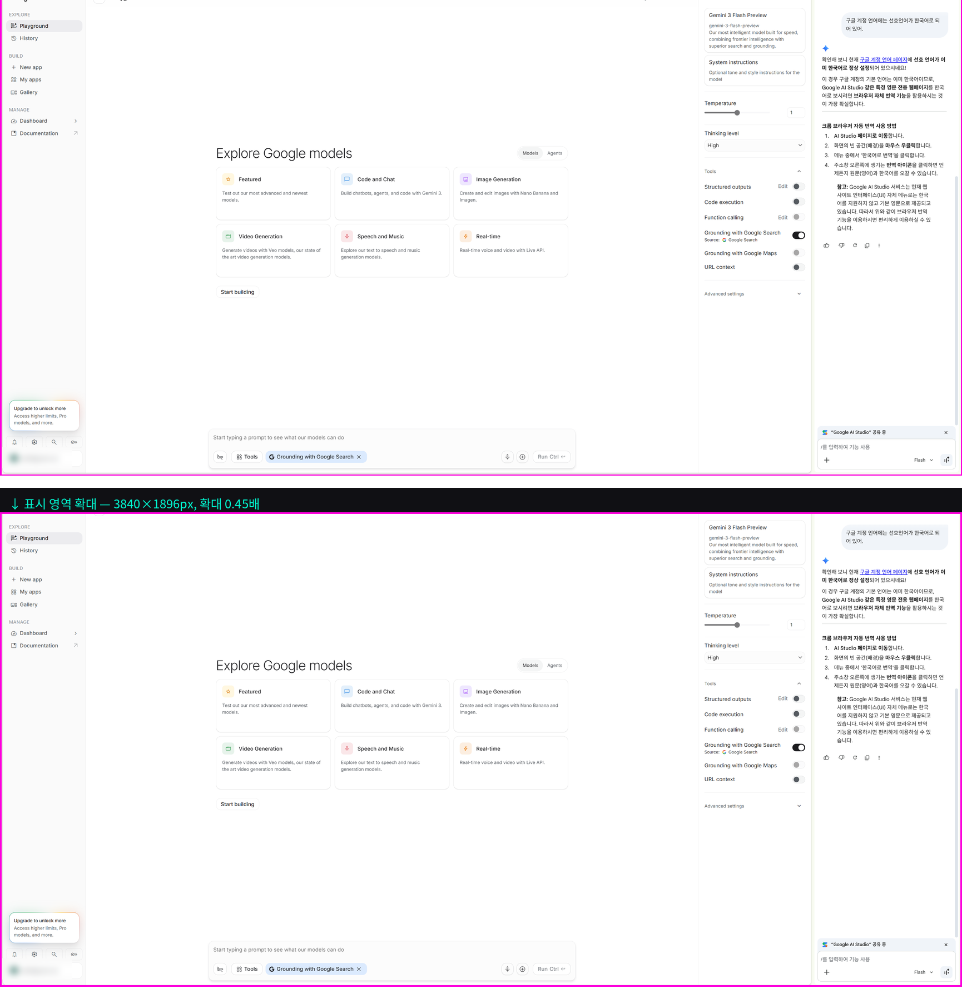
"선생님들, 지금까지 우리는 AI라는 뛰어난 직원을 '카카오톡' 메신저로만 지시하며 써왔습니다. 때로는 말을 안 듣기도 하고, 지시를 까먹기도 했죠. 이제는 그 직원의 '뇌 구조와 성격'을 직접 프로그래밍하는 관리자 제어판으로 들어갈 차례입니다. 인간은 자신이 처한 환경과 도구를 완벽히 통제할 수 있다고 느낄 때 강력한 내적 동기와 만족감을 얻습니다. AI 스튜디오는 여러분에게 바로 그 완벽한 '통제감(Sense of Control)'을 줍니다. Temperature(온도)를 0으로 설정해 한 치의 오차도, 헛소리(환각)도 허용하지 않는 깐깐한 '감사관'을 만들 수도 있고, 온도를 0.9로 올려 톡톡 튀는 아이디어를 쏟아내는 '크리에이티브 카피라이터'를 만들 수도 있습니다. 이 미세조정(Fine-Tuning)의 감각을 손끝으로 익히는 순간, 여러분은 더 이상 단순한 AI 챗봇 사용자가 아닌, AI를 부리는 'AI 지휘자'로 거듭나게 될 것입니다. 한 차원 높은 전문가의 세계로 들어오신 것을 환영합니다!"
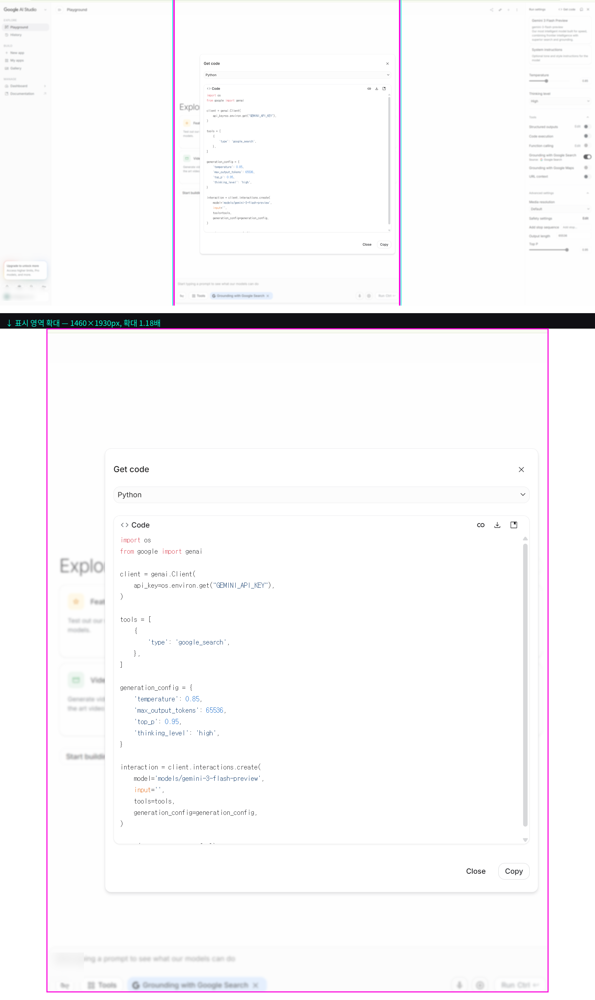
[시나리오: 시스템 지침과 온도 조절에 따른 극적인 결과 비교]
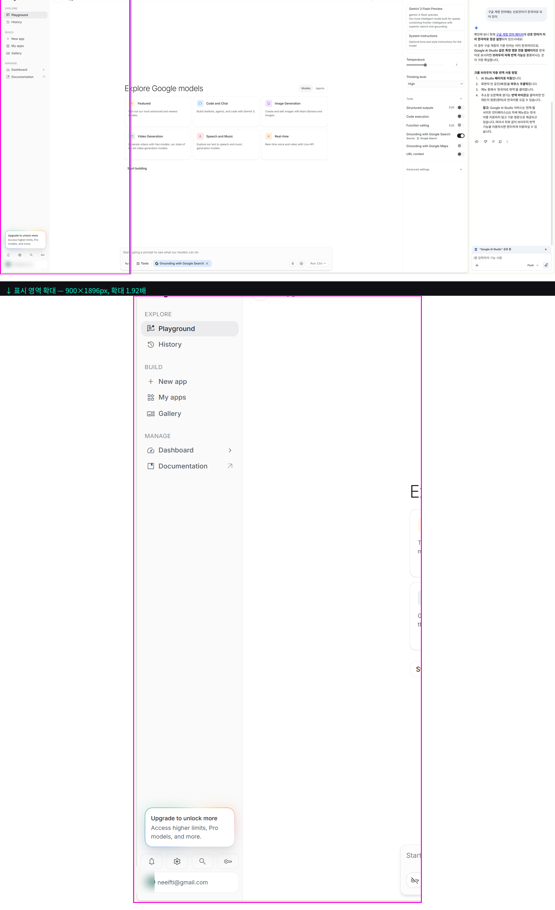
- 접속 및 UI 안내: 강사가 브라우저에서
aistudio.google.com에 접속하여 로그인합니다. 좌측의 System Instruction 창과 우측의 파라미터 패널(Temperature, Max output tokens 등)을 레이저 포인터로 짚어가며 설명합니다. - System Instruction의 위력 시연:
- 좌측에 "너는 지금부터 20년 경력의 까다롭고 원리원칙을 중시하는 정부기관 공문서 검토관이야. 모든 문장을 극도로 건조하고 명확한 공공기관 어투(명사형 종결)로 바꿔." 라고 뼈대를 주입합니다.
- 중앙 프롬프트에 "우리 자활센터에서 이번에 바자회를 하는데 물건 많이 팔아서 수익금 내면 좋겠어요. 구청에서 지원 좀 팍팍 해주세요."라고 대충 쓴 문장을 넣습니다.
- Run 버튼을 눌러, 구청장에게 보고해도 손색없는 완벽하고 엄격한 공문서 형태("~관련하여 바자회 개최를 통한 수익금 창출 및 자립 기반 조성을 목적으로 하오니, 귀 청의 적극적인 예산 지원을 요청드림.")로 극적으로 변환되는 것을 보여줍니다.
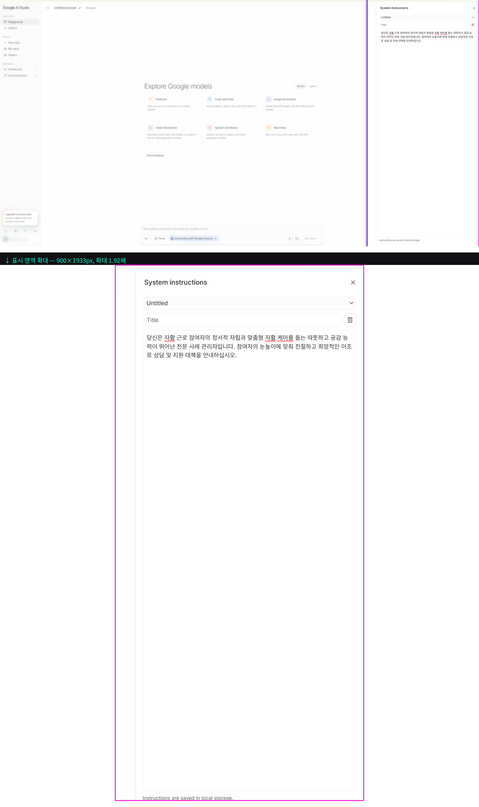
- 온도(Temperature) 조절 시연: 동일한 프롬프트(예: "자활사업단 이름 추천해줘")에 대해 온도 바(Bar)를 0.0으로 내렸을 때(뻔하고 정형적인 이름만 출력)와 온도 바를 1.0으로 끝까지 올렸을 때(기발하고 독특하며 감성적인 이름 출력)의 결과값 차이를 실시간으로 비교 시연합니다.
- 상황 설정: 선생님은 다음 주 지역 축제에 참여하여 우리 센터의 '수제 누룽지 사업단' 제품을 판매할 예정입니다. 주민들의 눈길을 사로잡을 감성적인 홍보 전단지 문구를 작성해야 합니다. AI 스튜디오를 이용해 평범한 AI를 '감성 100% 카피라이터'로 세팅해 봅니다.
- 실습 단계 (Nudge - 순서대로 따라 하세요):
- 크롬 브라우저를 열고 주소창에
aistudio.google.com입력 후 구글 계정으로 로그인 (필요시 약관 동의).
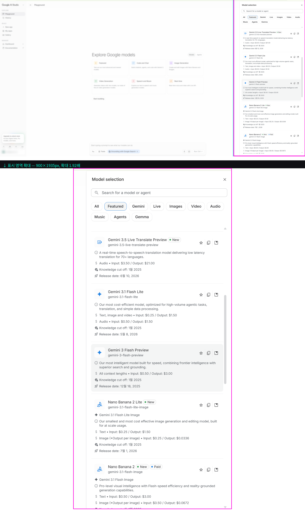
- 화면 좌측 상단의 System Instruction 입력창(또는 톱니바퀴 아이콘 안)을 찾아 아래 지침을 복사해 넣습니다:
"당신은 사람들의 심금을 울리는 따뜻하고 희망적인 어조를 가진 대한민국 최고의 카피라이터입니다. 제품의 기능적 설명보다는, 이웃의 정과 희망을 강조하는 공감형 단어를 주로 사용하십시오."
- 화면 우측 설정 패널에서 Temperature(온도) 슬라이더 바를 마우스로 드래그하여
0.85이상으로 높게 설정합니다. (창의성 극대화)
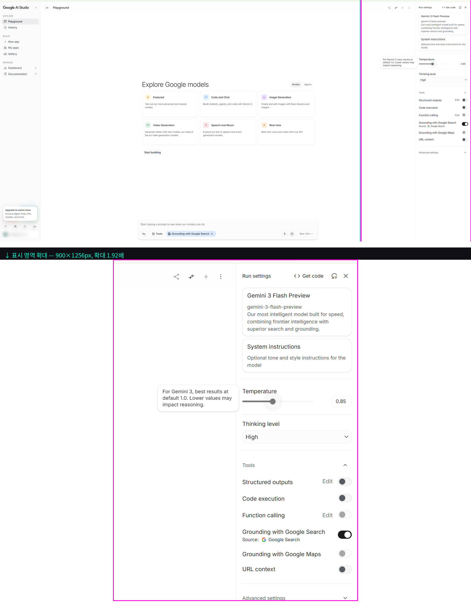
- 화면 하단 Prompt 입력창에 아래 내용을 입력 후
Run파란색 버튼을 클릭합니다:
"우리 지역 저소득층 이웃들이 매일 아침 정성껏 구워내는 '가마솥 수제 누룽지' 판매를 홍보하는 전단지 문구를 3가지 버전으로 제안해줘. (시선을 끄는 제목 1줄, 감동적인 본문 3줄 이내)"
- 실습 체크리스트:
- [ ] AI Studio 환경에 성공적으로 진입하였는가?
- [ ] System Instruction(시스템 지침) 영역과 일반 프롬프트 영역을 구분하여 알맞게 입력했는가?
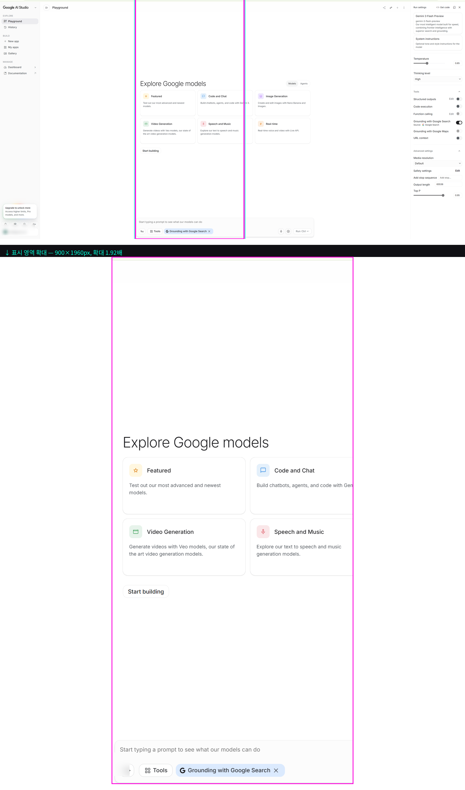
- [ ] Temperature 값을 인위적으로 조절해보았으며, 출력된 결과물이 일반적인 기계적 답변을 넘어 감성적이고 창의적인 어조를 띠고 있는 것을 체감했는가?
역량 검증 루브릭 (관찰 평가)
- 🌟 우수: System Instruction의 역할 부여 개념을 완벽히 이해하고, 업무 목적(창의성이 필요한 홍보물 vs 엄격한 사실관계가 중요한 공문서/예산서)에 따라 Temperature 값을 자유자재로 변경하며 최적의 결과물을 스스로 유도해냄. 동료의 결과물과 자신의 것을 비교 분석함.
- 🟢 보통: AI Studio 인터페이스에 무사히 접속하여, 강사가 제시한 세팅값(지침 및 온도)을 그대로 입력하고 결과를 도출해 내는 데 성공함.
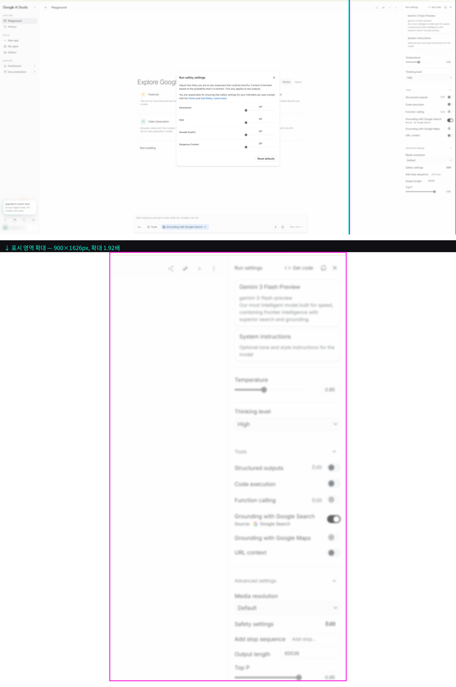
- 🔺 노력 요망: System Instruction 영역을 찾지 못해 일반 채팅창에 모든 지시사항을 몰아넣거나, Temperature 기능의 목적(창의성 vs 정확성)을 반대로 이해함.
- Before (도입 전): 일반 챗봇에서 매번 새로운 채팅을 시작할 때마다 "너는 자활 전문가야, 이런 어투로 말해, 이러이러한 규칙을 지켜"라고 긴 서론을 반복해서 지시해야 함. 대화가 길어지면 AI가 페르소나를 까먹고 엉뚱한 어투로 대답함 (프롬프트 드리프트 현상).
- After (도입 후): AI Studio의 System Instruction에 자활센터 맞춤형 역할을 한 번 강력하게 '하드코딩' 해두면, 아무리 대화가 길어져도 절대 일관된 페르소나와 어투를 잃지 않음. 반복 지시 시간이 사라지고 고품질의 안정적인 산출물을 지속적으로 확보 가능.
💡 심화 팁 & 트러블슈팅 Q&A Q: "온도를 끝까지(1.0 이상) 높였더니 AI가 말도 안 되는 소리를 지어냅니다." A: 온도가 높아질수록 AI는 다음 단어를 예측할 때 확률이 낮은 엉뚱한 단어를 선택할 가능성(무작위성)을 열어둡니다. 즉, 창의성은 최고조에 달하지만 없는 사실을 지어내는 '환각(Hallucination)' 현상도 급증합니다. 따라서 규정, 팩트 체크, 예산 계산이 중요한 '공문서 및 기획서' 작성 시에는 반드시 온도를 0.0 ~ 0.2 사이로 극도로 낮게 설정하여 정확성을 담보해야 합니다.
🔗 Google AI 공식 가이드: 프롬프트 설계 전략
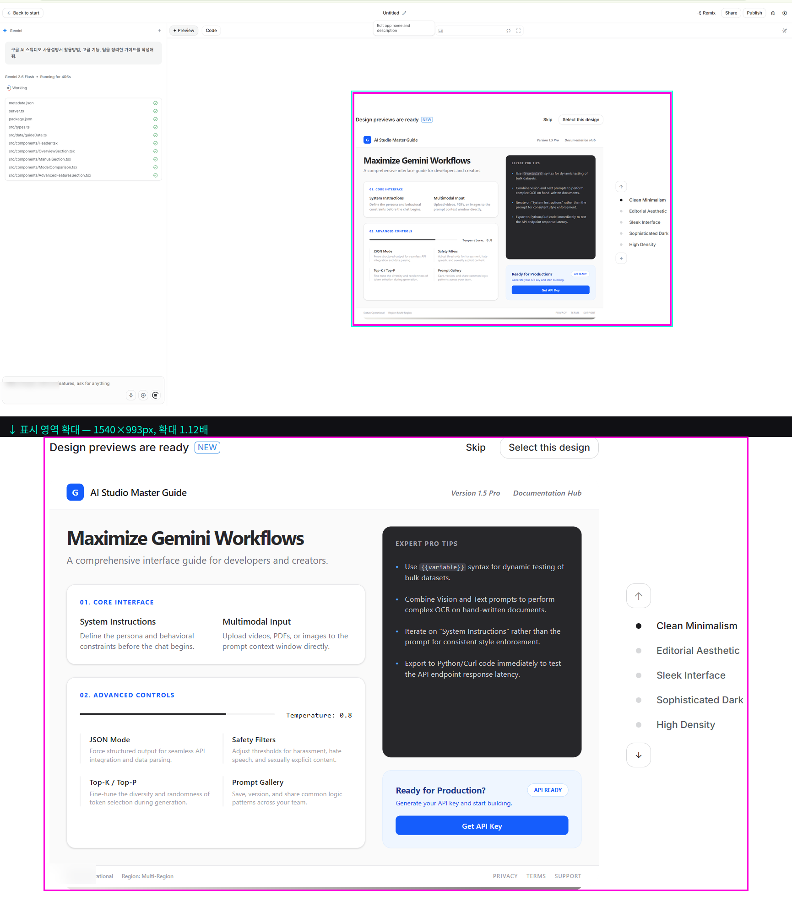
2-12[심화과정] 템플릿 슬라이드 연동 기법
워크스페이스 확장(Workspace Extensions) 기반 슬라이드 자동화 생성형 AI로 완벽하게 다듬어진 텍스트 기획안이나 구조화된 데이터를, 복사-붙여넣기 하는 수고로움 없이 Google Slides(또는 파워포인트)의 프레젠테이션 템플릿으로 실시간 연동하여 변환하는 최첨단 워크플로우입니다. Gemini 생태계 내에서 Google Workspace 앱(Docs, Slides, Drive 등) 간의 원활한 통합(Extensions) 기능을 활용하여, 텍스트가 시각적 슬라이드로 옷을 갈아입는 과정을 자동화합니다.
"여러분, 보고서 텍스트를 기가 막히게 썼다고 퇴근할 수 있나요? 아니죠. 내일 아침 센터장님께, 혹은 지자체 주무관님께 브리핑을 하려면 이걸 다시 파워포인트로 예쁘게 옮겨야 합니다. 텍스트를 복사하고, 슬라이드 새로 만들어서 붙여넣고, 글꼴 크기 줄이고, 줄 맞추고... 이 지루한 포맷팅 작업은 여러분의 뇌에 '인지적 마찰(Cognitive Friction)'을 일으켜 엄청난 스트레스를 유발합니다. 내용에 집중해야 할 에너지가 글자 간격 맞추는 데 소모되는 거죠. 자, 이제 이 인지적 마찰을 크게 줄이는 방법을 알려드리겠습니다. 정리하기 까다롭던 텍스트가 몇 번의 클릭으로 PPT 슬라이드에 들어가 제목과 본문으로 자리 잡는 것을 눈으로 확인해 보세요. 이 장면을 보는 순간, 여러분은 오늘 교육 중 가장 큰 환희를 느끼실 겁니다. 여러분의 내일 퇴근길 발걸음이 깃털처럼 가벼워질 수 있도록, 지금 바로 시연을 시작하겠습니다!"
[시나리오: 텍스트 기획안을 5장짜리 발표 자료로 10초 만에 변환]
- 준비: 강사가 이전 실습에서 만든 '친환경 다회용기 세척 사업 기획안' 텍스트를 화면에 띄웁니다.
- 익스텐션 호출: Gemini 프롬프트 창에
@(골뱅이) 기호를 입력하여 메뉴를 띄우고,Google Workspace(또는 Google Slides) 아이콘을 선택하여 연동 기능을 활성화하는 모습을 보여줍니다.
- 변환 지시: "이 기획안 내용을 바탕으로 5장짜리 Google Slides 프레젠테이션 초안을 당장 생성해줘."라고 지시하고 엔터를 칩니다.
- 생성 완료: 잠시 후 Gemini가 "프레젠테이션이 생성되었습니다"라며 슬라이드 위젯 링크를 제공합니다. 링크를 클릭하면 브라우저 새 탭에서 Google Slides가 열리며, 텍스트가 각 장의 제목과 개조식 본문으로 예쁘게 쪼개져 들어가 있는 이런 모습을 시연합니다. 참여자들의 감탄을 유도합니다.
- 상황 설정: 선생님은 앞서 [2-9]에서 작성한 훌륭한 '다회용기 세척 사업' 기획안을 손에 쥐었습니다. 갑자기 오늘 오후 3시에 지자체 공무원이 센터를 방문한다고 합니다. 이 기획안을 바탕으로 5분 브리핑용 프레젠테이션 슬라이드 초안을 급히 만들어야 합니다.
- 프롬프트 (복사해서 사용하세요):
@Google Workspace
(위 프롬프트 창에서 @를 입력하고 Google Workspace 또는 Slides를 꼭 선택해주세요!)
이전에 우리가 논의했던 '친환경 다회용기 세척 사업' 기획안의 핵심 내용을 바탕으로
외부 보고용 Google Slides 프레젠테이션 초안을 즉시 생성해줘.
[슬라이드 구성 가이드라인 - 총 5장]
1장: 프레젠테이션 제목 및 도입
2장: 사업 추진 배경 (왜 이 사업이 필요한가?)
3장: 주요 사업 내용 및 타겟 (누구를 대상으로 무엇을 하는가?)
4장: SWOT 분석 요약 (핵심만)
5장: 기대 효과 및 향후 비전
[디자인 규칙]
각 슬라이드 본문에는 너무 많은 글이 들어가지 않도록, 개조식(Bullet point)으로 핵심만 3줄 이내로 매우 간결하게 요약해서 작성해줘.- 실습 체크리스트 (행동 유도):
- [ ] 프롬프트 입력창에서
@를 치고 Google Workspace 익스텐션을 활성화했는가? (최초 사용 시 권한 허용 팝업이 뜰 수 있음)
- [ ] 지시한 대로 총 5장의 슬라이드 구성에 맞춰 프레젠테이션 위젯이 성공적으로 렌더링되었는가?
- [ ] 생성된 링크를 클릭하여 Google Slides로 이동한 후, 상단의 '테마(Theme)' 버튼을 눌러 디자인을 적용하고 시각적으로 다듬어 보았는가?
역량 검증 루브릭 (관찰 평가)
- 🌟 우수: 확장 프로그램(Extensions)의 연동 개념을 완벽히 이해하고, 텍스트를 슬라이드로 매끄럽게 넘김. 생성된 슬라이드 화면에서 불필요한 텍스트를 과감히 쳐내고, 센터 로고를 삽입하거나 레이아웃을 스스로 다듬어 실무에 즉각 투입할 수준으로 완성함.
- 🟢 보통: 강사의 지시대로 프롬프트에
@를 입력하여 슬라이드 초안 파일을 생성하고 여는 데까지 성공함.
- 🔺 노력 요망: Google Workspace 연동 권한 승인 단계를 헤매거나, 프롬프트에서 확장 프로그램 호출(
@)을 누락하여 AI가 슬라이드 파일 대신 텍스트로만 슬라이드 내용(시나리오)을 답변함.
- Before (도입 전): 텍스트 기획안이 완성되었음에도 불구하고, 파워포인트 프로그램을 새로 열어 슬라이드를 하나씩 추가하며 복사-붙여넣기, 글씨체 변경, 텍스트 상자 크기 조절 등 단순 노동(포맷팅 노가다)을 수행함. (최소 1~2시간 소요, 극심한 에너지 소진)
- After (도입 후): AI가 텍스트의 논리 구조를 스스로 분석하여, 최적의 슬라이드 배치로 목차와 본문을 나눈 초안 파일을 자동 생성함. 사용자는 클릭하여 연 뒤, 마음에 드는 디자인 테마를 클릭하고 약간의 미세 조정만 수행하면 끝남. (10분 이내 초안 완성). 시각화 작업의 진입 장벽 완전 붕괴.
💡 트러블슈팅 Q&A Q: "분명히 시키는 대로 했는데, 슬라이드 파일 링크는 안 주고 화면에 글씨로 '1장: 제목...' 이렇게 텍스트만 적어줍니다."
A: Gemini가 Google 계정의 다른 앱(Workspace)에 접근할 권한이 없거나 익스텐션 호출에 실패한 경우입니다. 1) 입력창에 @를 쳤을 때 나타나는 팝업에서 정확히 Workspace를 선택했는지 확인하세요.
2) 회사/기관 계정(Workspace 계정)의 경우 관리자가 보안상의 이유로 익스텐션 기능을 막아두었을 수 있습니다. 이 경우 일반 개인 Gmail 계정으로 로그인하여 테스트해 보시기 바랍니다. 🔗 Google Gemini 도움말: 연결된 앱 사용 및 관리
2-13노트북 기반 협업/공유 체계 구축
"여러분, 우리의 뇌는 새로운 정보를 혼자 처리할 때보다 타인과 교류하며 처리할 때 전두엽의 활성도가 급격히 상승합니다. 즉, '협업'은 단순한 업무 효율성을 넘어 우리의 뇌를 더 똑똑하게 만드는 강력한 촉매제죠. 지금부터 배울 노트북 기반 협업 체계는 여러분의 뇌에 '사회적 보상(Social Reward)'을 제공하여 도파민 분비를 촉진할 것입니다. 혼자서 끙끙 앓던 자활 사례 관리 아이디어를 동료와 클릭 한 번으로 공유하고, 피드백을 주고받는 짜릿함을 경험해 보세요. 자, 준비되셨나요?"
노트북(Gemini Notebooks 또는 유사 AI 협업 툴) 기반 협업은 분절된 데이터를 하나의 유기적인 지식망으로 연결하는 과정입니다. 기존의 단순 파일 공유(USB, 이메일) 방식에서 벗어나, AI가 맥락을 이해하고 요약해주는 작업 공간 자체를 동료와 공유함으로써 커뮤니케이션 비용(인지 부하)을 혁신적으로 낮춥니다.
[개념 이해]
- 노트북 공유의 본질: 단순한 '문서 열람 권한' 부여가 아닙니다. AI가 학습한 데이터 소스와 생성된 인사이트, 대화 맥락 전체를 팀원과 공유하는 '지식 워크스페이스'의 공유입니다.
- 인지 부하 최소화 효과: 새로운 실무자가 프로젝트에 투입될 때, 과거 히스토리를 파악하기 위해 수십 개의 폴더를 뒤질 필요 없이, 공유된 노트북에서 AI에게 질문하는 것만으로 즉시 온보딩이 가능합니다.
[💻 시연]
- 노트북 우측 상단의 [공유(Share)] 버튼 클릭
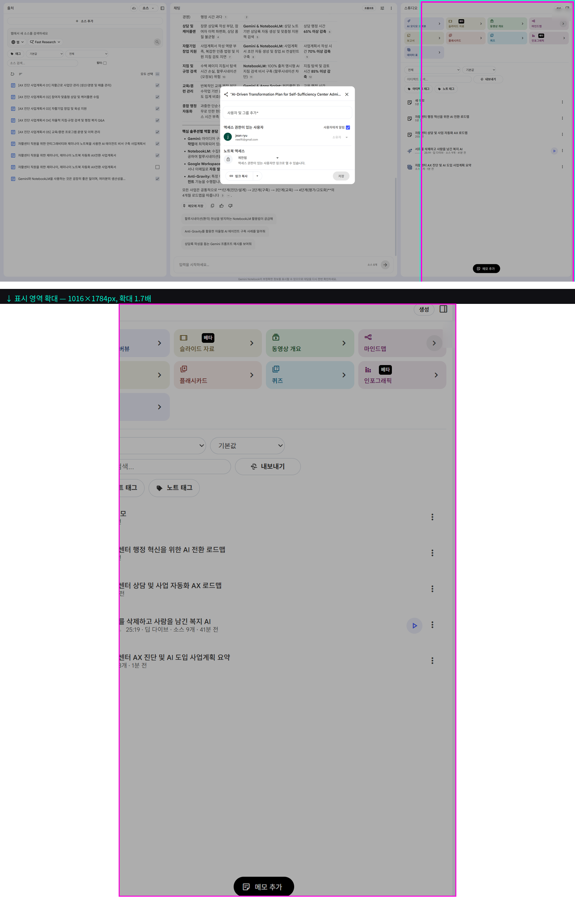
- 동료의 이메일(자활센터 내부 계정) 입력 및 권한(뷰어/편집자) 설정
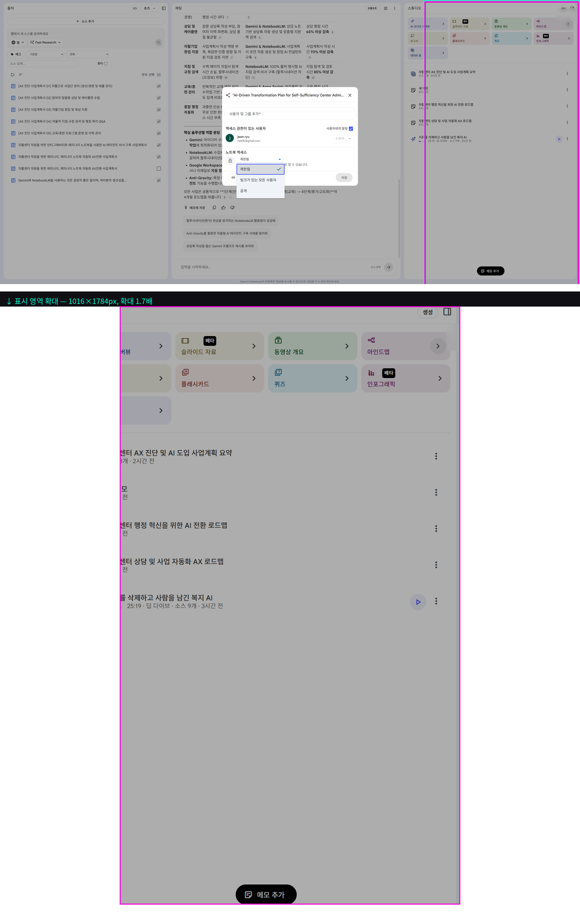
- 초대받은 동료가 링크를 클릭하여 동일한 AI 노트북 환경에 접속하는 과정 시연
- 동료가 노트북 내에서 AI에게 질문하여 "어제까지 작업한 주요 자활 프로그램 기획안 요약해줘"라고 질문하는 모습 시연
[✍️ 실습] 지역사회 연계 다회용기 세척 사업 제안서 초안 작성
- 상황 설정 (가상 샘플데이터): 지역사회 연계 사업(예: 다회용기 세척 사업) 제안서를 작성해야 합니다. 강사가 제공한 2개의 소스('2025년_타지역_우수사례_에코워시_다회용기_세척사업.pdf', '인천희망지역자활센터_다회용기세척사업_지역환경분석보고서.pdf')를 사용합니다.
- 실습 단계:
- 두 개의 소스 파일을 노트북에 업로드합니다.
- 채팅창을 통해 타 지역 우수사례의 핵심 성공 요인 3가지를 찾아 메모로 저장하세요(📌).
- 우리 지역에 적용할 때 예상되는 문제점 2가지를 채팅으로 물어보고 메모로 저장하세요(📌).
- 저장된 2개의 메모를 선택하여 하나의 새로운 메모로 [결합]하고, 제목을 '사업 제안서 초안'으로 수정하세요.
- 📥 실습 소스 파일 다운로드:
- 📄
타_지역_우수사례.pdf(2025년 경기 에코워시 다회용기 세척사업) - 📄
우리_지역_환경분석.pdf(인천희망지역자활센터 다회용기 사업 타당성 및 지역 환경분석) - 📦
2-7_실습용_자료_모음_다회용기세척사업_제안서.zip(전체 PDF/DOCX/TXT 패키지)
- 구체적인 프롬프트 (원클릭 복사용):
> 프롬프트 1 (타 지역 성공 요인 도출 ➔ 📌 핀 고정): > "타 지역 우수사례 문서(소스 1)를 기반으로, 다회용기 사업의 핵심 성공 요인 3가지를 개조식으로 요약해 줘." > > 프롬프트 2 (우리 지역 위협 및 문제점 도출 ➔ 📌 핀 고정): > "우리 지역 환경분석(소스 2)을 고려할 때, 이 사업을 도입할 경우 예상되는 가장 큰 문제점 2가지를 찾아줘."
- 실습 체크리스트:
- [ ] 2개의 소스 파일(타 지역 우수사례, 우리 지역 환경분석)을 정상 업로드했는가?
- [ ] 채팅 결과물을 핀(📌)을 눌러 성공적으로 메모 패널에 저장했는가?
- [ ] 다수의 메모를 선택(체크)하여 결합(Combine) 기능을 실행했는가?
- [ ] 결합된 메모의 제목을 '사업 제안서 초안'으로 수정하고 내용을 검토했는가?
[✅ 검증]
| 평가 항목 | 하 (초보) | 중 (숙련) | 상 (마스터) |
|---|---|---|---|
| 공유 기능 이해 | 공유 버튼을 찾지 못하거나 권한 설정을 헷갈려 함 | 뷰어 권한으로 초대는 가능하나 편집자 권한 설정에 어려움을 느낌 | 용도에 맞게 뷰어/편집자 권한을 정확히 부여하고 공유함 |
| 협업 시너지 | 공유 후 각자 따로 AI를 사용함 | 동료의 질문 결과를 확인하나 추가적인 연계 작업을 하지 못함 | 동료가 저장한 노트를 바탕으로 추가 질문을 던져 발전된 기획안을 도출함 |
[🚀 최적화]
- Before: 자료 취합을 위해 이메일로 파일을 주고받으며 최신 버전 확인에 시간 낭비 (높은 인지 부하).
- After: 하나의 공유된 AI 노트북 안에서 실시간으로 지식을 융합하고, AI의 요약을 통해 즉각적인 맥락 파악 가능 (인지 부하 최소화 및 업무 몰입도 상승).
🛠️ 트러블슈팅 Q&A
- Q: 초대를 보냈는데 동료가 메일을 받지 못했다고 합니다.
- A: 스팸 메일함을 확인하게 하거나, [링크 복사] 기능을 통해 메신저로 직접 공유 링크를 전달해 보세요. 단, 접근 권한이 '링크가 있는 모든 사용자'로 설정되지 않도록 주의해야 합니다.
- [Google 공식 도움말 링크] Google Drive 및 문서 공유 방법 (노트북 공유 원리와 동일)
2-14버전관리 및 대화 히스토리 관리
"작업하다가 '아, 아까 AI가 해준 대답이 훨씬 좋았는데!' 하고 후회한 적 있으신가요? 우리 뇌는 단기 기억의 한계(한 번에 4~7개의 정보만 기억)를 있습니다. 이 한계를 극복해주는 완벽한 외장 하드가 바로 '대화 히스토리 관리'입니다. 과거의 성공적인 대화 맥락을 쉽게 찾아 재사용할 때, 여러분은 불확실성이 해소되는 깊은 안도감과 통제감을 느끼게 됩니다. 이는 뇌의 스트레스 호르몬(코르티솔)을 낮추고 더 창의적인 생각에 집중할 수 있게 해줍니다."
AI와의 대화는 일회성 검색이 아니라 '연속적인 사고의 과정'입니다. 훌륭한 결과물은 한 번의 질문이 아니라 꼬리를 무는 대화(Chain of Thought)에서 나옵니다. 따라서 과거의 대화(히스토리)를 체계적으로 관리하고 필요한 시점(버전)으로 돌아갈 수 있는 능력은 고급 AI 활용의 필수 요건입니다.
[개념 이해]
- 대화 스레드(Thread) 분리: 한 채팅창에서 모든 주제를 다루면 AI의 맥락이 섞여 할루시네이션(환각)이 발생하기 쉽습니다. 주제별로 새 대화를 생성하여 독립된 히스토리를 유지해야 합니다.
- 핀셋 저장 (Pinning & Saving): 중요한 답변은 흘려보내지 않고 즉각적으로 '노트'나 '문서' 형태로 고정(Save)하여 특정 버전의 결과물을 박제해 두어야 합니다.
[💻 시연]
- 주제가 섞인 혼란스러운 대화창 보여주기 (예: 자활 사업 기획을 묻다가 갑자기 엑셀 함수를 물어보는 상황) -> AI 답변 품질 저하 시연
- 주제를 분리하는 올바른 방법 시연 — 채팅창에는 '새 대화(New Chat)' 버튼이 없습니다.
- ① 남겨야 할 답변은 핀(📌)으로 메모에 저장한다.
- ② 같은 소스로 다른 관점의 대화를 하려면 노트북을 복제해 소스를 재활용한다.
- ③ 주제가 완전히 다르면 상단 [+ 노트북 만들기]로 새 노트북을 생성한다.
- ⚠️ 채팅 섹션의 점 세 개(⋯) → [채팅 기록 삭제]는 복구가 불가능하다. 지우기 전에 반드시 메모로 저장할 것.
- 이전 대화 히스토리 목록에서 제목을 직관적으로 변경(Rename)하는 방법 시연 (예: "Untitled" -> "26년 하반기 예산안 초안")
- 마음에 드는 답변을 복사하는 대신, [노트에 저장] 버튼을 눌러 스냅샷을 남기는 시연
[✍️ 실습] 지역사회 연계 다회용기 세척 사업 제안서 초안 작성
- 상황 설정 (가상 샘플데이터): 지역사회 연계 사업(예: 다회용기 세척 사업) 제안서를 작성해야 합니다. 강사가 제공한 2개의 소스('2025년_타지역_우수사례_에코워시_다회용기_세척사업.pdf', '인천희망지역자활센터_다회용기세척사업_지역환경분석보고서.pdf')를 사용합니다.
- 실습 단계:
- 두 개의 소스 파일을 노트북에 업로드합니다.
- 채팅창을 통해 타 지역 우수사례의 핵심 성공 요인 3가지를 찾아 메모로 저장하세요(📌).
- 우리 지역에 적용할 때 예상되는 문제점 2가지를 채팅으로 물어보고 메모로 저장하세요(📌).
- 저장된 2개의 메모를 선택하여 하나의 새로운 메모로 [결합]하고, 제목을 '사업 제안서 초안'으로 수정하세요.
- 📥 실습 소스 파일 다운로드:
- 📄
타_지역_우수사례.pdf(2025년 경기 에코워시 다회용기 세척사업) - 📄
우리_지역_환경분석.pdf(인천희망지역자활센터 다회용기 사업 타당성 및 지역 환경분석) - 📦
2-7_실습용_자료_모음_다회용기세척사업_제안서.zip(전체 PDF/DOCX/TXT 패키지)
- 구체적인 프롬프트 (원클릭 복사용):
> 프롬프트 1 (타 지역 성공 요인 도출 ➔ 📌 핀 고정): > "타 지역 우수사례 문서(소스 1)를 기반으로, 다회용기 사업의 핵심 성공 요인 3가지를 개조식으로 요약해 줘." > > 프롬프트 2 (우리 지역 위협 및 문제점 도출 ➔ 📌 핀 고정): > "우리 지역 환경분석(소스 2)을 고려할 때, 이 사업을 도입할 경우 예상되는 가장 큰 문제점 2가지를 찾아줘."
- 실습 체크리스트:
- [ ] 2개의 소스 파일(타 지역 우수사례, 우리 지역 환경분석)을 정상 업로드했는가?
- [ ] 채팅 결과물을 핀(📌)을 눌러 성공적으로 메모 패널에 저장했는가?
- [ ] 다수의 메모를 선택(체크)하여 결합(Combine) 기능을 실행했는가?
- [ ] 결합된 메모의 제목을 '사업 제안서 초안'으로 수정하고 내용을 검토했는가?
[✅ 검증]
| 평가 항목 | 하 (초보) | 중 (숙련) | 상 (마스터) |
|---|---|---|---|
| 스레드 분리 | 하나의 대화창에서 여러 주제를 섞어서 질문함 | 주제별로 방을 나누지만, 제목을 정리하지 않아 나중에 찾기 어려워함 | 주제별 생성 및 직관적인 네이밍 컨벤션(예: [태그] 제목)을 적용하여 관리함 |
| 맥락 유지 | 이전 대화를 무시하고 처음부터 다시 길게 질문함 | 대화 히스토리를 찾아가서 확인은 하나 텍스트를 복사해서 새 방에서 씀 | 기존 스레드로 돌아가 "방금 말한 내용에서 이어서~" 형식의 맥락 기반 질문을 능숙하게 구사함 |
[🚀 최적화]
- Before: "어제 AI가 잘 써준 글이 있었는데..." 하며 스크롤을 한참 올리거나 결국 포기하고 다시 질문하여 시간을 낭비함.
- After: 잘 정돈된 서랍장처럼 대화 히스토리가 관리되어, 필요한 업무 맥락을 곧바로 불러오고 즉각적인 후속 작업 착수 가능.
🛠️ 트러블슈팅 Q&A
- Q: 대화 기록이 갑자기 사라졌어요!
- A: 일시적인 네트워크 오류이거나, 브라우저 캐시 문제일 수 있습니다. 새로고침(F5)을 누르거나 로그아웃 후 재로그인해 보세요. 그래도 안 보인다면, '임시 대화(History Off)' 모드가 켜져 있지 않은지 확인해야 합니다.
- [Google 공식 도움말 링크] Gemini 앱 활동 관리 및 삭제 (히스토리 관리 개념)
2-15데이터 프라이버시 및 보안 설정
"우리가 일하는 자활센터는 민감한 개인정보(주민등록번호, 의료 기록, 경제적 취약 계층 정보 등)를 다루는 최전선입니다. 여러분, 보안 사고는 거창한 해킹이 아니라 사소한 '복사-붙여넣기' 실수에서 시작됩니다. 뇌의 '자동화(System 1)' 사고 패턴이 무심코 민감 정보를 AI에게 넘겨버릴 수 있죠. 우리는 이를 방지하기 위해 '의도적 멈춤(System 2 개입)'이라는 인지적 브레이크를 만들 것입니다. 오늘 배울 비식별화와 보안 설정은 여러분과 기관을 법적 위험으로부터 완벽히 보호해 줄 강력한 방패입니다."
[개념 이해]
상용 AI 모델(무료 버전 등)에 입력된 데이터는 AI의 학습 목적으로 사용될 위험이 존재합니다. 실무자는 정보의 민감도를 스스로 판단하고, AI에게 데이터를 넘기기 전 반드시 '비식별화(De-identification)' 과정을 거쳐야 합니다. 또한 계정 환경에서 데이터가 학습에 사용되지 않도록 설정하는 옵션을 숙지해야 합니다.
- 비식별화 처리: 이름, 연락처, 상세 주소, 주민번호 등 개인을 특정할 수 있는 정보를 가명 처리(예: 김철수 ➔ 참여자 A, 010-9999-8888 ➔ 010-XXXX-XXXX)하는 작업.
- AI 학습 동의 옵션 (Opt-out): 내가 입력한 프롬프트와 소스 데이터가 AI 모델 개선(학습)에 사용되지 않도록 계정 설정에서 제어하는 기능.
- 폐쇄형 환경 활용: 중요 문서는 퍼블릭 AI 챗봇에 텍스트로 붙여넣지 않고, 데이터 유출이 차단된 로컬 환경이나 보안이 보장된 기관용 워크스페이스에서만 다루는 원칙.
[💻 시연]
- 민감 개인정보(실명, 전화번호, 상세 주소, 채무액)가 포함된 원본 상담 기록 화면 제시
- AI 창에 붙여넣기 전 메모장에서 [찾아 바꾸기(Ctrl+H)]를 통해 이름과 연락처를 일괄 마스킹하는 과정 시연
- AI 설정(Settings) 메뉴 진입 ➔ '데이터 및 개인정보 보호' ➔ 학습 모델 기여 끄기(Opt-out) 설정 시연
- 비식별화된 데이터만 AI에 입력하여 개인정보 유출 없이 완벽한 요약 결과를 얻는 모습 시연
[✍️ 실습] 민감 개인정보 비식별화(마스킹) 및 안전한 AI 요약 실습
- 상황 설정: 자활 참여자 '김철수(55세, 010-9999-8888, 인천 부평구 부평대로 123 거주, 채무 3천만 원)'의 심층 상담 기록을 AI를 통해 안전하게 요약해야 합니다.
- 가상 샘플데이터 (마스킹 전 원본 - 드래그해서 메모장에 복사하세요):
참여자 성명: 김철수 (만 55세, 남성, 연락처: 010-9999-8888)
실거주지: 인천광역시 부평구 부평대로 123, 희망빌라 302호
상담 내용: 참여자는 3년 전 운영하던 식당 폐업 후 약 3,000만 원의 금융권 채무가 발생하여 신용불량 상태임.
현재 월세 45만 원과 관리비가 3개월째 연체되어 주거 불안이 심각하며, 허리 디스크로 인한 통증으로 장시간 보행이 어려워 맞춤형 일자리(좌식 근로) 연계 및 긴급 생계·주거비 지원이 시급히 요구됨.- 구체적인 프롬프트 및 행동 유도 (Nudge):
- [🛑 멈춤 넛지!] 복사하기 전에 손을 떼세요! 메모장이나 텍스트 편집기에 샘플 데이터를 먼저 복사합니다.
- 개인을 특정할 수 있는 정보(이름, 연락처, 상세 주소)를
'참여자 A','010-XXXX-XXXX','인천 O구 O빌라'등으로 직접 수정(비식별화)하세요. - 설정 창으로 이동하여 본인 계정의 '데이터 및 개인정보 보호' 메뉴에서 학습 모델 기여 끄기(Opt-out)를 실행하세요. (실제 환경에 맞춰 옵션 확인)
- 비식별화가 완료된 텍스트만 AI에 붙여넣고 아래 프롬프트를 입력하세요.
- 실습 프롬프트 (원클릭 복사용):
아래 비식별화된 상담 기록을 바탕으로, 참여자의 주요 당면 과제 2가지를 객관적 어조로 요약해줘.
[비식별화된 상담 기록]
참여자 성명: 참여자 A (만 55세, 남성, 연락처: 010-XXXX-XXXX)
실거주지: 인천광역시 O구 O빌라
상담 내용: 참여자는 3년 전 운영하던 식당 폐업 후 약 3,000만 원의 금융권 채무가 발생하여 신용불량 상태임.
현재 월세 45만 원과 관리비가 3개월째 연체되어 주거 불안이 심각하며, 허리 디스크로 인한 통증으로 장시간 보행이 어려워 맞춤형 일자리(좌식 근로) 연계 및 긴급 생계·주거비 지원이 시급히 요구됨.- 실습 체크리스트:
- [ ] 텍스트를 AI에 붙여넣기 전, 메모장에서 이름·연락처·상세주소를 '참여자 A', '010-XXXX-XXXX' 등으로 철저히 마스킹했는가?
- [ ] AI 계정 설정에서 개인정보 보호 및 학습 데이터 기여 옵션(Opt-out)을 확인/조정했는가?
- [ ] 비식별화된 데이터만 입력하여 개인정보 유출 없이 안전하게 당면 과제 2가지 요약을 얻었는가?
[✅ 검증]
- 역량 검증 루브릭:
- 우수: 모든 식별 가능 정보(이름, 연락처, 세부 호수)를 완벽히 마스킹하고, Opt-out 옵션을 스스로 제어하여 안전하게 결과를 도출함.
- 보통: 이름과 연락처는 마스킹했으나 상세 주소나 호수를 일부 누락함.
- 미흡: 원본 텍스트를 마스킹 없이 그대로 붙여넣거나 보안 설정 메뉴를 찾지 못함.
[🚀 최적화]
- Before: "개인정보가 유출되면 어쩌지?" 하는 막연한 불안감에 AI 활용을 포기하거나, 무심코 민감 정보를 업로드하는 치명적 리스크 발생.
- After: '의도적 멈춤 ➔ 사전 비식별화 ➔ Opt-out 설정' 3단계 보안 프로토콜이 체화되어 100% 안전하고 당당하게 AI 행정 혁신을 실천.
2-16멀티소스 교차 검색 및 필터링 기법
"정보가 너무 많아서 오히려 결정하기 힘든 현상을 '정보 과부하(Information Overload)'라고 합니다. 이때 우리 뇌는 피로를 느끼고 결정을 미루는 '인지적 회피'를 선택하게 되죠. 하지만 걱정 마세요. AI에게 '단일 소스'가 아닌 '멀티 소스'를 주고 교차 분석을 시키면, AI가 여러분의 뇌를 대신해 엄청난 양의 데이터를 체로 걸러줍니다. 파편화된 3개년 문서들 사이에서 공통점과 평가지표 충족 여부를 찾아내는 AI의 모습을 보면, 마치 수십 명의 연구원을 거느린 센터장이 된 듯한 지적 도파민이 솟구칠 것입니다!"
[개념 이해]
현업에서는 한 가지 문서만 보고 판단하는 경우가 드뭅니다. '2024년 실적', '2025년 실적', '2026년 평가지표 가이드라인' 등 다수의 문서(멀티소스)를 동시에 업로드하여 정보를 교차 검증(Cross-validation)하고, 평가 등급 기준에 맞는 핵심 성과와 보완점을 추출해내는 기법은 AI 행정 활용의 백미입니다.
- 멀티소스 교차 분석: 과거 2개년 실적과 최신 지침 문서를 동시에 참조하게 하여, 평가 기준 충족 여부와 취약 지표를 도출하는 고도화 프롬프팅 기법.
- 동적 필터링(Dynamic Filtering): "2026년 배점 확대 항목만", "친환경 가점 지표만", "자활기업 유지 실적만" 등 명확한 제약 조건을 주어 필요한 데이터만 일목요연하게 추출하는 기법.
- 할루시네이션 통제: "반드시 업로드된 3개 소스 문서(2024 실적, 2025 실적, 2026 평가지표)에 근거해서만 답변하고, 각 항목마다 출처 문서명을 명시하라"는 제약을 부여함.
[💻 시연]
- 서로 다른 3개의 파일(2024_실적.txt, 2025_실적.txt, 2026_평가지표.pdf)을 하나의 노트북에 일괄 업로드 시연
- 나쁜 예시 시연: "우리 센터 평가 잘 받으려면 어떻게 해야 해?" ➔ 일반론적이고 두루뭉술한 답변 출력 확인
- 좋은 예시 시연: "업로드된 3개 문서를 교차 분석하여, 2026년 강화된 평가지표 기준으로 우리 센터의 강점 2가지와 보완해야 할 취약점 2가지를 출처 문서명과 함께 표로 정리해 줘."
- AI가 3개 문서를 교차 분석하여 정확한 지표 비교와 실질적인 평가 대비 전략을 도출하는 모습 확인
[✍️ 실습] 센터 성과평가 대비 3개년 멀티소스 교차 분석 및 전략 도출
- 상황 설정: 올해 센터 평가를 준비하며, 과거 2년 치 실적 자료('2024_실적.txt', '2025_실적.txt')와 올해의 평가 지표 가이드라인('2026_평가지표.pdf')을 하나의 노트북에서 교차 비교 분석해야 합니다.
- 📥 실습 소스 파일 다운로드 (3종 파일):
- 📄
2024_실적.txt(인천희망자활 2024 사업실적 총괄) - 📄
2025_실적.txt(인천희망자활 2025 사업실적 총괄) - 📄
2026_평가지표.pdf(보건복지부 2026 성과평가 가이드라인 핵심 요약) - 📦
2-16_실습용_자료_모음_다중문서교차검색.zip(전체 패키지)
- 구체적인 프롬프트 및 행동 유도 (Nudge):
- 제공된 샘플 파일 3개(
2024_실적.txt,2025_실적.txt,2026_평가지표.pdf)를 모두 하나의 노트북 소스에 업로드하세요. - 소스 목록에서 3개 문서의 체크박스가 모두 활성화(선택)되어 있는지 확인하세요.
- 아래의 교차 검색 프롬프트를 정확히 복사해서 붙여넣고 실행하세요.
- 실습 프롬프트 (원클릭 복사용):
업로드된 3개의 문서(2024_실적, 2025_실적, 2026_평가지표)를 교차 비교 분석하여 다음 항목을 일목요연하게 정리해 줘.
1. [2026년 신규 및 강화된 핵심 평가지표 3가지]
2. [2024~2025년 우리 센터 실적 중, 2026년 평가 기준에 부합하는 대표적인 강점 요인 2가지]
3. [2026년 최고 등급(A등급) 달성을 위해 올해 반드시 보완해야 할 취약 지표 2가지 및 실천 방안]
※ 작성 시 유의사항: 각 항목별로 근거가 된 출처 문서명(2024_실적.txt, 2025_실적.txt, 2026_평가지표.pdf)을 반드시 괄호 안에 명시할 것.- 실습 체크리스트:
- [ ] 3개의 소스 문서(2024 실적, 2025 실적, 2026 평가지표)가 노트북 소스 영역에 모두 정상 업로드되었는가?
- [ ] AI가 특정 문서 하나에만 치우치지 않고 3개 문서를 모두 참조하여 교차 분석 결과를 도출했는가?
- [ ] 도출된 답변에 각 근거 문서명이 정확하게 명시되었는가?
[✅ 검증]
- 역량 검증 루브릭:
- 우수: 3개 문서를 동시에 제어하여 2026년 평가지표 대비 센터의 강점과 약점을 완벽히 도출하고 출처까지 검증함.
- 보통: 3개 문서를 업로드했으나 질문이 다소 모호하여 단일 문서 중심의 답변을 얻음.
- 미흡: 멀티소스 업로드에 실패하거나 외부 웹 정보가 섞인 답변을 필터링하지 못함.
[🚀 최적화]
- Before: 모니터 양쪽에 여러 문서를 띄워놓고 눈이 빠지게 번갈아 보며 차이점을 수동으로 비교 분석 (안구 피로도 극심, 3시간 이상 소요).
- After: 다중 문서를 노트북에 일괄 탑재하고 교차 조건식 프롬프트 1회로 평가 대비 핵심 통찰을 10초 만에 도출.
🛠️ 트러블슈팅 Q&A
- Q: 3개를 올렸는데 AI가 자꾸 1번 문서 내용만 요약해 줘요.
- A: AI는 기본적으로 가장 먼저 인식한 문서에 가중치를 두는 경향이 있습니다. 프롬프트에
[문서 1]과 [문서 2], [문서 3]을 반드시 각각 교차 참조하여 비교하라는 명시적 지시(Explicit Instruction)를 내려야 균형 잡힌 분석이 가능합니다.
🔗 Google 공식 도움말 링크: NotebookLM 멀티소스 활용 가이드
※ 강의 종료 후 실무자들에게 '마스터 수료증' 발급 요건을 안내하며 내적 동기와 실전 활용 의지를 한 번 더 고취합니다.